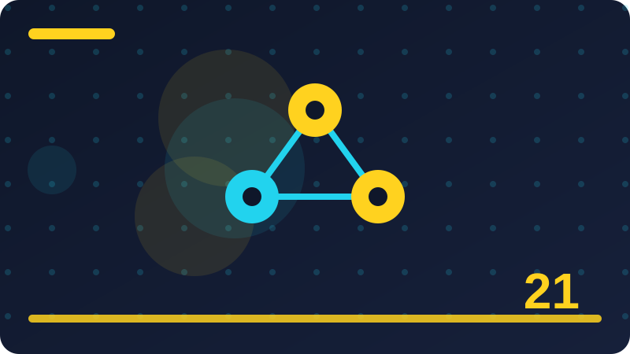

Chapter 21: Evaluating AI Answers Honestly

Section 1: What Evaluation Really Means
Evaluation is the habit of checking an answer before you trust it. When a program gives you a reply, a summary, or a prediction, evaluation asks: is this answer good enough for the job? That sounds easy, but it hides careful thinking. A good answer is not always the longest, most confident, or fanciest answer. It is one that is correct, complete enough, safe, and useful where it will be used. Evaluation finds out whether those things are true, instead of guessing.
Think of evaluation like tasting food before you serve it to guests. You would not serve an untasted dish just because the recipe looked nice. Likewise, do not ship an AI tool just because it worked once, or sounded smart in a demo. Test it on many examples, including hard and tricky ones, write down what happened, and look for patterns in the failures. That record turns a feeling like "it seems fine" into evidence.
Beginners often make one common mistake: they test only on examples they already know will work. That is like practising only the questions you already know before an exam. It feels good, but it teaches you nothing about the questions you will actually face. Honest evaluation does the opposite. It deliberately includes examples you have not seen before, examples that are messy, and examples where the right answer is "I do not know." A system that admits it does not know is often more useful than one that guesses confidently, because a wrong guess can mislead a reader.
Evaluation also needs a clear purpose. Before you test, decide what success looks like. Are you checking facts, or style, or speed, or safety? A summary tool needs to keep the important facts and drop the rest. A question-answering tool needs to give the right fact and show where it came from. A classification tool needs to put each item in the right box most of the time. Without a clear purpose, you may praise a tool for something nobody asked for, while missing its real job.
Another important idea is separation. The examples you use to build a tool should not be the same examples you use to judge it. If a student memorises the exam paper, a high score tells you nothing about what they learned. The same is true for AI. Keep some examples locked away, untouched, until evaluation time. Those held-out examples are your honest mirror: they show how the tool behaves on new material, as it will for real users.
Finally, evaluation is never a single number that settles everything. A score like eighty percent is a starting point, not a verdict. You still need to read the mistakes and decide whether they are harmless or dangerous. Eighty percent on trivia is very different from eighty percent on safety advice, where one error can cause real harm. Honest evaluation keeps the number and the story together.
answers = ["Paris", "Paris", "London", "Paris"]
correct = ["Paris", "Paris", "Paris", "Paris"]
score = sum(1 for a, c in zip(answers, correct) if a == c)
print(score, "out of", len(correct))Check: In your own words, why is testing only on easy examples a dishonest way to evaluate an AI tool?
Section 2: Gold Answers and Test Sets
A gold answer is the answer you have already decided is correct, written down before you test anything. It is called gold because it is the standard you measure against, like a gold weight on a scale. Without gold answers, evaluation becomes a matter of opinion: you look at an output, shrug, and say it looks fine. With gold answers, you can compare, count, and learn. For a quiz tool, the gold answer is the correct fact. For a summary tool, it might be a short list of points the summary must include. For a sorting tool, it is the correct label for each item. Writing gold answers takes time, but it is the most honest work in AI building.
A test set is simply a collection of examples, each with its gold answer attached. Good test sets are built with care. They should cover the ordinary cases a user will meet every day, and also the edge cases that appear rarely but matter when they do. They should include short and long, clear and messy inputs, in the styles real users actually write. If all your test examples sound like you, written in your voice, your test set will flatter your tool and hide its weaknesses with other people's writing. Try to gather examples from different people, topics, and situations, within what is fair and legal to use.
One rule matters more than any other: do not train on your test set. Training means adjusting your tool so it does better on examples it has seen. If you peek at the test answers and tune your tool until it passes them, you have not improved the tool; you have only taught it the test. Keep the test set separate from the start. Write it, lock it away in a folder you do not edit during building, and open it only when it is time to evaluate. When you find a failure, fix the general problem in your tool, not the single test example, and then re-test.
Gold answers are not always perfect, and honest builders admit that. Sometimes two reasonable people disagree about the best summary, or the fairest label, or the clearest wording. When that happens, write down the rule you used, and apply it the same way to every example. If a case is genuinely unclear, mark it as unclear rather than forcing a false certainty. A test set with a few honestly marked unclear cases is far more trustworthy than one that pretends every question has one obvious answer. You can also ask a second person to check some gold answers, to catch your own blind spots.
Finally, keep your test set small enough to run often, and large enough to mean something. Twenty examples can reveal big problems quickly, which is useful while you are building. Two hundred examples give a steadier score when you are deciding whether a change really helped. Start small, grow the set as you learn what kinds of mistakes your tool makes, and keep a note of when each example was added and why. A test set can grow, but gold answers should change only when you find a genuine error in them, never to improve your score.
test_set = [
("What is the capital of France?", "Paris"),
("What is two plus two?", "4"),
]
for question, gold in test_set:
print(question, "-> gold:", gold)Check: What is a gold answer, and why must you keep your test set separate from your building examples?
Section 3: Accuracy, and What It Hides
Accuracy is the simplest score in evaluation: the number of correct answers divided by the total number of answers. If your tool answers ninety questions correctly out of one hundred, its accuracy is ninety percent. That simplicity is its strength and its weakness. Accuracy is easy to explain to anyone, easy to compute, and useful for a first look at whether a tool is working at all. When accuracy is very low, something is clearly wrong. When it is very high, the tool may be doing well, or it may be hiding a problem behind a flattering average. Learning to read accuracy carefully is a core skill for any AI builder.
The classic trap is an unbalanced test set. Imagine a spam filter tested on one hundred emails, where ninety-five are ordinary mail and only five are spam. A lazy tool that calls everything ordinary mail would score ninety-five percent accuracy, yet it would catch no spam at all. The number looks excellent, but the tool is useless for its real job. The same trap appears in medical screening, fraud detection, and any task where one kind of answer is rare but important. Whenever one class is much more common than another, accuracy alone can lie to you, and you need to look deeper.
That deeper look starts with separating the kinds of mistakes. For each kind of answer, ask how often the tool gets it right, and how often it confuses it with something else. A tool that is excellent at recognising cats but terrible at recognising dogs has a specific weakness, and you will only see it if you break the score down by category. A simple table, sometimes called a confusion table, shows these patterns at a glance: rows for the true answer, columns for the predicted answer, and counts in each cell. The diagonal shows correct answers; the off-diagonal cells show exactly where confusion happens, which tells you what to fix next.
Accuracy also hides differences in cost. Not all mistakes cost the same. Missing a spam email is annoying; blocking an important job offer as spam is far worse. Labelling a harmless comment as harmful is unfair to the writer; missing a genuinely harmful comment leaves someone unprotected. A single accuracy number treats all these mistakes as equal, which they are not. Honest evaluation asks, for this tool and these users, which mistakes hurt most, and then pays special attention to those, even if they are rare in the test set.
So use accuracy as a starting point, never as the whole story. Report it together with the size of the test set, the balance of categories, and the breakdown by category. Say plainly how many examples of each kind were tested, and where the errors fell. If a score looks surprisingly good, check whether the test set was too easy, too unbalanced, or too close to the training examples. A builder who reports accuracy with its context is trusted far more than one who flashes a single big number and hides the details behind it.
predicted = ["mail", "mail", "spam", "mail"]
gold = ["mail", "spam", "spam", "mail"]
accuracy = sum(p == g for p, g in zip(predicted, gold)) / len(gold)
print("Accuracy:", accuracy)Check: Give an example where a high accuracy score hides a tool that is actually useless for its main job.
Section 4: Precision, Recall and Balance
Precision and recall are two scores that help you see past accuracy, especially when one kind of answer is rare or costly. They sound technical, but the ideas are simple. Precision asks: when the tool says yes, how often is it right? Recall asks: of all the real yes cases, how many did the tool find? A spam filter with high precision rarely blocks good mail by mistake. A spam filter with high recall catches most of the real spam. You usually cannot maximise both at once, so honest evaluation means choosing the balance your users actually need.
Consider a tool that flags harmful comments. If it flags only the most obvious cases, its precision will be high, because almost everything it flags truly is harmful. But its recall will be low, because many harmful comments slip through unflagged. If instead it flags anything slightly suspicious, its recall will rise, because it catches more real cases, but its precision will fall, because many innocent comments get flagged too. Neither setting is wrong in itself. The right setting depends on the harm of each mistake: in a children's forum, missing harmful content may matter more; in a debate forum, wrongly silencing people may matter more. The builder must decide, and say so openly.
You can compute both scores with small counts. Count the true positives, where the tool says yes and the gold answer is yes. Count the false positives, where it says yes but the gold answer is no. Count the false negatives, where it says no but the gold answer is yes. Precision is true positives divided by all the tool's yes answers. Recall is true positives divided by all the real yes cases. These formulas look fiddly at first, but after you work through two or three tiny examples by hand, they become second nature, and they give you a much sharper picture than accuracy alone.
A combined score, often called the F1 score, blends precision and recall into one number by taking their harmonic mean, which punishes a score that is high on one and terrible on the other. F1 is handy for quick comparison, but it still hides the trade-off, so report precision and recall alongside it whenever the balance matters. If a change raises F1 but wrecks recall on the cases your users care about most, that change is not an improvement, no matter what the single number says. Always check the parts, not just the blend.
In practice, start by deciding which mistake hurts more for your tool, then tune and report with that in mind. For a search tool over your own notes, missing a relevant note is mildly annoying, while returning a few extra notes is harmless, so recall may matter more. For an automatic blocking tool, false positives harm real people, so precision deserves extra weight. Write your choice down, with a sentence of reasoning, so that anyone reading your evaluation later understands why you chose that balance. That written reasoning is part of honest evaluation, not an extra decoration.
tp, fp, fn = 8, 2, 4
precision = tp / (tp + fp)
recall = tp / (tp + fn)
print("Precision:", precision, "Recall:", recall)Check: In plain words, what is the difference between precision and recall, and why might you accept lower precision to gain recall?
Section 5: Judging Summaries and Free Text
Judging a short answer like "Paris" is easy: it matches the gold answer or it does not. Judging a summary, an explanation, or any free text is much harder, because many different wordings can be equally good. A summary might use different words, a different order, or a different length, yet still capture exactly the right facts. Automatic scores that count matching words can help, but they often reward copying the gold wording and punish a good summary written in fresh words. That is why evaluating free text needs both counting and human reading, used together with clear rules.
Start by listing what a good answer must contain. For a summary, write down the key facts, usually three to seven points, that a reader must learn from it. Then check each summary against that list: which points are present, which are missing, and which facts in the summary are wrong or invented. This fact checklist turns a vague feeling like "this summary seems okay" into something you can count and compare across many summaries. It also makes disagreements useful: if two checkers disagree about a point, the checklist wording probably needs to be clearer, and fixing it improves every later evaluation.
Also judge what the summary leaves out on purpose. A good summary drops detail; that is its job. The question is whether it dropped the right detail. Dropping a minor example is fine. Dropping a warning, a number, or a condition that changes the meaning is not fine. Read the original and the summary side by side, and mark each omission as harmless or harmful. Beginners often praise summaries that are short and smooth, without noticing that the smoothness was achieved by quietly deleting an important exception. Smoothness is not correctness, and a summary that reads beautifully while changing the meaning has failed.
Style matters too, but it should not outrank truth. Check whether the summary is clear, whether it keeps the right tone, and whether a reader who only reads the summary would be misled. Watch for hedging that hides uncertainty, and for confident phrasing attached to a guess. A summary that says "the study proves" when the original says "the study suggests" has overstated the evidence, even if every other word is fine. Small wording changes like that are exactly what careful evaluation is for, because readers trust summaries precisely when they do not have time to check the original.
Finally, use a small number of human judges, with the same checklist, and compare their scores. If judges agree closely, your checklist is clear and your results are steadier. If they disagree wildly, your task definition needs work before you trust any score. Report how many judges you used, and whether they agreed. Automatic word-matching scores can then be used for quick checks during building, while the checklist judgement remains the real verdict for important decisions. That combination, fast automatic checks plus careful human checks, is how serious teams evaluate free text without fooling themselves.
key_points = ["date", "place", "result"]
summary_points = ["date", "place"]
covered = len(set(summary_points) & set(key_points))
print(covered, "of", len(key_points), "points covered")Check: Why is a fact checklist more trustworthy than simply asking whether a summary "looks good"?
Section 6: Human Judgement and Agreement
Machines can count matching words, but only people can judge whether an answer is helpful, clear, fair, or misleading in context. That is why human judgement remains central to honest evaluation, even in a field full of automatic scores. A human judge reads the question, the gold answer, and the tool's answer, and decides how good the answer is against rules written in advance. Those rules, called guidelines, are the difference between a careful evaluation and a collection of personal opinions. Without guidelines, two judges will disagree, and you will not know whether the tool or the judges are at fault.
Writing good guidelines takes practice. Start with a short scale, for example from one to five, and write a sentence for each level describing exactly what it means. A score of five might mean correct, complete, and clear, with no invented facts. A score of three might mean mostly correct but missing an important point. A score of one might mean wrong, misleading, or off topic. Give one example answer for each level, taken from real outputs if possible. Judges who have examples to compare against agree far more than judges who only have abstract descriptions, because examples show what the words mean in practice.
Use more than one judge for the same answers, at least for a sample. If two judges score the same fifty answers and mostly agree, you can trust the average. If they disagree often, do not average the disagreement away and pretend it vanished. Instead, look at the answers where they disagreed, and ask what made them hard. Often the guidelines were vague, the question itself was unclear, or the answer was partly right in a way the scale did not capture. Fixing the guideline, and re-scoring, is real evaluation work, not wasted time. It sharpens both the tool and your understanding of the task.
Be careful about who judges, too. Judges bring their own backgrounds, assumptions, and blind spots. If all your judges share the same background, they may all miss the same problem, such as a summary that is clear to experts but confusing to beginners, or a label that feels fair to one group and unfair to another. Where it matters, include judges from different backgrounds, and pay attention to disagreements between groups, not just the overall average. A tool that scores well on average but badly for one group of users has a fairness problem that the average hides.
Finally, protect judges from bias in the setup. Do not tell them which tool produced which answer, if you are comparing tools, because knowing the source changes how people score. Mix the answers in random order, so that a judge does not get kinder or harsher as they tire. Give judges breaks, and keep each judging session short enough to stay careful. Honest human evaluation is slower than automatic scoring, but for the decisions that matter, such as whether to release a tool to real users, there is no honest substitute for careful human reading.
judge_a = [5, 4, 3, 5, 2]
judge_b = [5, 4, 4, 5, 2]
agree = sum(1 for a, b in zip(judge_a, judge_b) if a == b)
print("Agreed on", agree, "of", len(judge_a))Check: Why should you use more than one judge, and what should you do when judges disagree?
Section 7: Reading Mistakes Instead of Just Counting Them
A score tells you how often a tool fails. Reading the mistakes tells you why it fails, and why is the part that lets you fix it. After every evaluation, set aside time to read a sample of wrong answers slowly, with the question and the gold answer beside them. Sort the mistakes into groups: facts that were wrong, facts that were missing, answers that were too vague, answers that misunderstood the question, and answers that were correct but badly explained. You will usually find that most mistakes belong to just two or three groups. Those groups are your real to-do list, far more useful than a single percentage.
This sorting is sometimes called error analysis, but you do not need a fancy name to do it well. Take twenty wrong answers and write one short label for each. Then count the labels. If twelve mistakes are missing facts, your tool needs better retrieval or clearer instructions about completeness. If twelve mistakes are invented facts, you have a different problem, covered in the next chapter, and you need checks that catch unsupported claims. If twelve mistakes misunderstand the question, the problem may be in how questions are worded, or how your tool reads them. Each pattern points to a different fix, which is why lumping all errors together as "wrong" wastes the most valuable information evaluation gives you.
Pay special attention to mistakes that look confident. A short, hesitant wrong answer is easy for a user to doubt. A long, smooth, confident wrong answer is dangerous, because readers tend to trust fluency. When you read mistakes, mark confidence separately from correctness: was the answer sure of itself, or did it hedge? Tools that are wrong and confident need urgent attention, even if they are rare, because users will act on them. Tools that are wrong but clearly uncertain give the user a chance to check, which is a much safer failure.
Also look for mistakes that cluster around certain topics, phrasings, or groups of people. A tool might work well on short questions but fail on long ones, or work well on common topics but fail on rarer ones. It might handle one dialect or writing style well and another badly. These clusters matter because they tell you who your tool serves poorly, and a tool that serves some users well and others badly is not ready for general use, even if its average score looks fine. Report clusters honestly, with example counts, rather than averaging them away.
Finally, turn error analysis into a loop. Fix the biggest group, re-test on fresh examples, and read the new mistakes. The biggest group will change, and that change is progress. Keep a short log: date, score, biggest mistake group, fix attempted, and new score. Over time that log becomes the story of how your tool improved, and it protects you from the common trap of fixing one thing while quietly breaking another. A builder who can say "our biggest remaining problem is X, and here are ten examples" understands their tool. A builder who can only quote a score does not yet.
mistakes = ["missing fact", "wrong fact", "missing fact", "vague", "missing fact"]
from collections import Counter
print(Counter(mistakes).most_common())Check: Why is sorting mistakes into groups more useful than only reporting an overall score?
Section 8: Test Leakage and Cheating Yourself
Test leakage happens when information from your test set sneaks into your building process, so the test no longer measures new performance. It is usually accidental, not dishonest, which is why it is so common and so dangerous. You might reuse a test example as a demonstration, copy a test phrase into your instructions, or tune a rule until a particular test case passes. Each small leak makes the score a little less honest. Enough small leaks, and a tool that looks excellent on the test set will disappoint real users, because real users do not come from the test set.
The classic form of leakage is training on the test data. If your tool learns from examples, and those examples include the test set, the test is no longer a test; it is a memory check. But leakage has subtler forms too. Choosing which features to use because they work well on the test set is leakage. Trying twenty settings and keeping the one with the best test score is leakage, because you have used the test set to choose, even if you never trained on it directly. That is why careful builders keep a separate validation set for tuning, and reserve the test set for a final check, used rarely and never for decisions about details.
Another subtle leak is near-duplication. Suppose your test set contains a question about a famous landmark, and your building examples contain almost the same question with one word changed. The tool may appear to generalise, when it has really memorised a near-copy. The same problem appears with summaries of the same article, or labels for near-identical items. When you build a test set, check for near-duplicates against your building data, not just exact copies. Remove or rewrite anything too close, so that passing the test genuinely requires understanding, not recall of a lookalike.
Leakage also happens through people. If the person who wrote the test examples also tuned the tool, they may unconsciously shape the tool around those examples, even without intending to cheat. That is normal human behaviour, not bad character, and the defence is process, not willpower: separate roles where you can, freeze the test set early, and write down every change made after seeing test results. If a change was motivated by a test failure, say so, and confirm it on fresh examples that were not part of that test run.
The honest response to leakage is not shame but repair. If you discover a leak, report it, rebuild a clean test set, and re-evaluate. A lower, honest score is worth far more than a higher, leaked one, because only the honest score predicts real performance. Teams that treat leakage as a routine risk, with checks and fresh test sets, build tools users can trust. Teams that ignore it build tools that shine in demos and stumble in the real world.
train = {"q1", "q2", "q3"}
test = {"q3", "q4"}
print("Leaked overlap:", train & test)Check: What is test leakage, and what is one practical step you can take to prevent it?
Section 9: Comparing Two Tools Fairly
Sooner or later you will need to compare two tools, or two versions of the same tool, and decide which is better. Fair comparison sounds simple, but it is easy to get wrong. The first rule is to test both tools on exactly the same examples, in the same conditions. If one tool gets easy questions and the other gets hard ones, the comparison means nothing. Use the same test set, the same gold answers, and the same scoring rules for both. Any difference in setup is a difference that could explain the result, instead of the tools themselves.
The second rule is to decide the scoring rules before you see the results. If you look at the outputs first and then choose the score that favours your preferred tool, you have not compared tools; you have dressed up a preference as evidence. Write down the main score, and any secondary scores, in advance. For a summary tool, that might be facts covered first, and clarity second. For a classifier, it might be recall on the rare class first, and overall accuracy second. Pre-deciding the rules protects you from your own bias, which is strongest exactly when you care most about the outcome.
Third, look at more than the average difference. If tool A scores eighty-two percent and tool B scores eighty percent, that two-point gap might be real, or it might be noise from a small test set. A useful check is to look at the examples where they disagree: how many does each win, and by how much? If A wins on fifty examples and B wins on forty-eight, the gap is fragile. If A wins on eighty and B wins on eighteen, the gap is steadier. You do not need advanced statistics to do this first check; a simple count of wins and losses on the same examples already tells you a lot about how solid a small lead really is.
Also compare the kinds of mistakes, not just the totals. Two tools with the same score can fail very differently. One might invent facts, while the other omits them. One might be fast but sloppy, while the other is slow but careful. For your users, those differences may matter more than two percentage points. Read a sample of outputs from each tool side by side, blind if possible, so you do not know which tool produced which answer while you judge. Blind comparison is a simple trick that removes a surprising amount of bias.
Finally, report comparisons honestly, including the cases where the new tool is worse. If a change improves one score but harms another, say so, and explain the trade-off. If the improvement is tiny and fragile, say that too, rather than announcing a breakthrough. Over time, honest small comparisons build a tool that genuinely improves. Exaggerated comparisons build excitement that collapses the first time a real user tries the tool on a hard, ordinary task.
a_wins, b_wins, ties = 80, 18, 2
print("A wins:", a_wins, "B wins:", b_wins, "Ties:", ties)Check: Why must both tools in a comparison be tested on exactly the same examples with rules decided in advance?
Section 10: Scores for Classification Tasks
Classification means putting each item into a category: spam or not spam, positive or negative, urgent or routine. Evaluating a classifier starts with the simple counts from earlier chapters, but a good evaluation goes further, because users experience classifiers through their errors, not their averages. A classifier used to sort support messages, for example, is judged by whether urgent messages reach a human quickly, not by whether it sorts routine messages correctly. So begin every classifier evaluation by naming the category that matters most, and reporting its scores separately from the rest.
For each category, report precision and recall, as in Section 4, and also look at the confusion pattern: which categories get mixed up with each other? If urgent messages are often labelled routine, that is a specific, fixable problem, perhaps caused by training examples where urgent wording was mild. If two categories are often confused, consider whether the categories themselves are clearly defined. Sometimes the honest fix is not a better model but clearer category definitions, with examples that show the boundary between them. Builders often discover, through confusion patterns, that their own categories were fuzzy all along.
For tasks with more than two categories, an average across categories can hide a weak one. A macro-average, which gives each category equal weight, will expose a category that performs badly even if it is rare. A weighted average, which weights by how common each category is, will reflect overall user experience more closely. Report both, or at least say which one you are using, because the choice changes the story. A classifier that scores ninety percent weighted but fifty percent macro is excellent on common cases and poor on rare ones, and users with rare cases deserve to know that.
Thresholds deserve attention too. Many classifiers produce a score, such as how confident they are that a message is spam, and then apply a cutoff: above the cutoff counts as spam, below it does not. Moving the cutoff trades precision against recall, as discussed earlier. When you evaluate, try several cutoffs on your validation set, not your test set, and show how the scores change. Then choose the cutoff that fits your users' needs, and lock it in before final testing. A cutoff chosen to maximise the test score is another form of leakage, and it will not hold up on new data.
Finally, evaluate on data that resembles real use, including messy, short, and unusual inputs. A classifier tested only on clean, textbook examples will surprise you in production. Include typos, slang, short messages, and mixed topics, if your real users produce them. And re-evaluate regularly, because the world changes: new kinds of spam appear, language shifts, and categories drift. A classifier is not evaluated once and finished; it is evaluated on a schedule, like a machine that needs regular servicing to stay safe and useful.
scores = {"urgent": 0.72, "routine": 0.95, "spam": 0.88}
for label, score in scores.items():
print(label, score)Check: Why should you report scores per category, rather than only one overall score, for a classifier?
Section 11: Evaluating Retrieval and Search
Retrieval means finding the right pieces of information before answering, as you learned in Chapter 17. Evaluating retrieval is different from evaluating a final answer, because a retrieval step can fail in its own ways: it can miss the right document, return irrelevant documents, or return the right document buried below many wrong ones. If you only judge the final answer, you will not know whether the failure was in finding or in using the information. So evaluate retrieval separately, with its own scores, before you judge the whole system.
The simplest retrieval score is recall at a cutoff: of the relevant documents for a question, how many appear in the top few results? If a question has three relevant notes in your collection, and your search returns two of them in its top five results, its recall at five is two out of three. A related score is precision at a cutoff: of the top five results, how many are relevant? These scores are easy to compute by hand on a small collection, and they immediately show whether your search is finding the right material or drowning it in noise.
Order matters too. A user will read the first few results far more carefully than the tenth. A score that rewards putting relevant documents early is therefore more honest about user experience than one that only counts whether they appear somewhere in a long list. You can approximate this by checking the rank of the first relevant result: if it is usually first or second, the search feels good; if it is usually eighth, the search feels broken even when its overall recall looks acceptable. When you report retrieval results, include both the count and the typical rank, so readers can picture the actual experience.
Building a retrieval test set is similar to building any test set: write questions, and for each one, list which documents in your collection are genuinely relevant. This takes care, because relevance is sometimes a judgement call. A document that mentions the topic in passing is not the same as one that answers the question. Write a short rule, such as "relevant means it contains the fact needed to answer, not merely the topic," and apply it consistently. If a document is borderline, mark it and note why, rather than silently including or excluding it to favour your tool.
Finally, test retrieval on the kinds of questions real users ask, including vague ones, misspelled ones, and questions phrased differently from the documents. A search that only works when the question uses the exact words of the document is brittle, and users will quickly learn not to trust it. Also test with documents added over time, because a collection that grows can change retrieval behaviour in surprising ways. Honest retrieval evaluation, done on your own files with your own questions, gives you a clear picture of whether your tool finds facts before it answers, or merely pretends to.
retrieved = ["docA", "docB", "docC"]
relevant = {"docA", "docC", "docD"}
hits = [d for d in retrieved if d in relevant]
print("Hits in top 3:", len(hits), "of", len(relevant), "relevant")Check: Why should you evaluate the retrieval step separately from the final answer of a system that uses retrieval?
Section 12: Evaluating Language Outputs
Language outputs, such as explanations, stories, or instructions, are judged on more than correctness. A language answer can be factually right but confusing, polite but useless, or clear but incomplete. Honest evaluation therefore uses several dimensions, each scored separately, instead of one vague overall mark. Useful dimensions include correctness, completeness, clarity, relevance, and safety. Score each one on a short scale with written examples, as in Section 6, and report them separately. A tool that is correct but unclear needs different work from one that is clear but wrong, and only separate scores reveal that.
Relevance deserves special attention, because language tools often answer a nearby question instead of the asked question. They may give a beautiful general explanation when the user asked for a specific step, or drift into extra topics the user did not need. When you judge relevance, compare the answer directly with the question, sentence by sentence if needed, and mark any part that does not serve the question. Long answers are especially prone to this drift: they feel thorough, but much of their length may be padding. Short, relevant answers often beat long, drifting ones, even though beginners tend to praise length.
Clarity is also easy to misjudge. An answer can use simple words yet be badly organised, jumping between ideas without signposts. Or it can use technical words correctly but assume knowledge the reader does not have. When judging clarity, read as your intended reader would, not as the builder who already knows the answer. Ask whether a beginner could follow the steps in order, whether each term is explained when it first appears, and whether the conclusion is easy to find. If you must re-read a paragraph three times to understand it, the answer is not clear, however accurate it is.
Safety is a dimension that must never be averaged away. An answer that is mostly helpful but contains one dangerous instruction, one piece of private information, or one unfair claim has failed on safety, even if its other scores are high. Judge safety separately, with a simple pass or fail, and treat any failure as blocking release until it is fixed. This rule protects users, and it protects builders too, because a safety failure discovered after release is far more costly than one caught during evaluation. Later chapters return to safety in depth.
Finally, remember that language evaluation changes with the audience. An explanation for a child, a beginner, and an expert should not be judged by the same standard. Before you evaluate, write down who the reader is, what they already know, and what they need to do after reading. Then judge against that reader's needs. A tool that writes excellent expert explanations but confusing beginner explanations is not a generally good tool; it is a specialist tool, and it should be described honestly as one. Naming the audience is part of naming what you evaluated.
scores = {"correctness": 4, "clarity": 3, "relevance": 5, "safety": 5}
for name, value in scores.items():
print(name, value, "/ 5")Check: Why should you score correctness, clarity, relevance and safety separately instead of giving one overall mark?
Section 13: Small Samples and Uncertain Scores
Every score comes from a sample of examples, and small samples give uncertain scores. If you test on ten examples and get nine right, your score is ninety percent, but that number is fragile: one more mistake would drop it to eighty percent. If you test on one thousand examples and get nine hundred right, the same ninety percent is far steadier, because one example barely moves it. Beginners often report small-sample scores as if they were precise, and then are surprised when real users see very different results. Honest evaluation always reports the sample size alongside the score, so readers can judge how much to trust it.
A helpful habit is to think in ranges, not points. With twenty examples, a score of eighty percent could easily be seventy or ninety on a different set of twenty. With two hundred examples, the range narrows considerably. You do not need formal statistics to grasp this: simply imagine drawing a different set of examples from the same kind of task, and ask how much the score might move. If the answer is "a lot," your sample is too small for a confident claim, and you should either test more examples or soften your language, saying "around eighty percent on our small test set" rather than "eighty percent, full stop."
Small samples are still useful, especially early in building, when you are hunting for big problems rather than measuring small differences. Ten well-chosen examples can reveal a broken feature in minutes. The mistake is not using small samples; it is using them to claim a final verdict, or to compare two tools that differ by only a few points. If tool A beats tool B by one example out of twenty, that is not evidence that A is better; it is evidence that you need more examples, or that the tools are roughly equal and the choice should rest on other factors, such as speed, safety, or simplicity.
You can also make small samples more informative by choosing them carefully. Instead of twenty random examples, include a mix: easy, hard, typical, and edge cases, with each kind labelled. Then report scores per kind, not just overall. A tool that scores perfectly on easy cases but poorly on hard ones tells a clearer story than a single average, even with a small total. And keep adding examples over time, especially examples that resemble real failures, so your sample grows in the directions that matter most.
Finally, when you do compare tools on a small sample, look at the individual disagreements, as in Section 9. If the tools disagree on only a handful of examples, read those examples closely: they may reveal a real difference in approach, or they may be genuinely ambiguous cases where either answer is defensible. Either way, reading them teaches you more than the score difference does. Uncertainty is not a failure of evaluation; it is honest information, and reporting it plainly is what separates a careful builder from one who merely chases impressive numbers.
for total, correct in [(10, 9), (100, 90), (1000, 900)]:
print(total, "examples:", correct / total)Check: Why is ninety percent on ten examples much less trustworthy than ninety percent on one thousand examples?
Section 14: Baselines: Beating Something Simple
A baseline is a very simple tool or rule that you compare your AI tool against. It might be always guessing the most common answer, or using a short list of hand-written rules, or returning the first search result without any cleverness. Baselines sound unimpressive, but they are essential, because they answer the question: is this complicated tool actually better than something trivial? If a sophisticated tool barely beats a simple rule, the extra complexity may not be worth it. If it beats the baseline by a wide, steady margin on fresh examples, you have real evidence of value.
Beginners often skip baselines, and then celebrate a score that a trivial rule would also achieve. A classifier that scores ninety-five percent on an unbalanced task, as in Section 3, may be beaten by the baseline of always guessing the common class. A summary tool that scores well on word overlap may be beaten by simply copying the first sentence of the original. These are not hypothetical traps; they happen constantly in real projects, and the only defence is to actually run the baseline and compare, rather than assuming your tool must be better because it is more complicated.
Good baselines are deliberately dumb but honest. For classification, try the most-common-class baseline and a simple rule baseline, such as a keyword list. For search, try sorting by simple word overlap. For question answering over your own notes, try returning the note with the most shared words. Write each baseline in a few lines of plain Python, run it on the same test set, and record its score beside your tool's score. The gap between them, not the absolute score alone, is the measure of what your cleverness actually added.
Baselines also help you decide when to stop. If a simple rule already meets your users' needs, with less risk, less cost, and easier explanation, then the simple rule may be the right product, and the AI tool may be unnecessary complexity. That is not a failure; it is good engineering. Many real products use simple rules for most cases and reserve AI for the cases where rules genuinely fail. Reporting that a baseline was good enough, and choosing it, is an honest and often wise outcome that users and teams respect.
Finally, keep your baselines in your evaluation record, with their code and scores, so that later improvements can be judged against them too. As your tool improves, the baseline stays fixed, which makes progress visible over time. If a later version falls below the baseline on some category, that is a warning sign worth investigating immediately. A project with strong baselines rarely fools itself for long, because there is always a simple, checkable number standing next to the impressive one, asking the quiet question: are you really better than this?
baseline = ["mail"] * 10
gold = ["mail"] * 9 + ["spam"]
score = sum(1 for p, g in zip(baseline, gold) if p == g) / len(gold)
print("Most-common baseline:", score)Check: What is a baseline, and why should you compare your tool against one before celebrating a high score?
Section 15: Evaluation Checklists You Can Reuse
A checklist turns honest evaluation from a good intention into a repeatable habit. Instead of remembering everything in this chapter each time, write a short checklist and use it for every evaluation. A good checklist fits on one page, and covers the decisions that most often get skipped under time pressure: test set, gold answers, baselines, breakdowns, and reporting. The checklist below is a starting point; adapt it to your tool, but keep it short enough that you will actually use it every time, even when you are in a hurry.
First, the test set: is it separate from building examples, does it cover easy, hard, and edge cases, and is its size written down? Second, the gold answers: are they written before testing, with rules for unclear cases, and has someone else checked a sample? Third, the baseline: have you run at least one simple baseline on the same test set, and recorded its score? Fourth, the breakdown: have you reported scores per category, per difficulty, and per group of users where relevant, rather than only an overall average? Fifth, the mistakes: have you read a sample of errors, sorted them into groups, and named the biggest group?
Sixth, the trade-offs: have you reported precision and recall where they matter, and stated which mistake costs more for your users? Seventh, the comparison: if you compared tools, did they use the same test set and pre-decided rules, and did you look at individual disagreements? Eighth, the safety check: did you judge safety separately, with a pass or fail, and is any failure blocking release? Ninth, the reporting: can someone else, reading your notes, understand what you tested, how you scored, and what the limits were? If any answer is no, fix that item before you announce a result.
Checklists also protect you from the most human failure in evaluation: enthusiasm. When a tool finally works after long effort, the temptation to declare victory and skip the careful checks is strong. A checklist does not remove enthusiasm, but it channels it: you celebrate after the checks, not instead of them. Teams that use checklists catch more problems before release, and they also argue less, because disagreements become about specific checklist items rather than vague feelings about quality.
Keep your checklist with your project, and update it when you learn a new lesson. If a failure reaches users that your checklist would have caught, add that check. If a checklist item never catches anything and always wastes time, consider removing or simplifying it. A checklist is a tool, not a ritual, and like any tool it should earn its place by preventing real mistakes. The goal is not a longer list, but a list that reliably stops the mistakes you actually make.
checklist = ["test set separate", "gold answers written", "baseline run", "mistakes read"]
done = ["test set separate", "gold answers written"]
print("Done:", len(done), "of", len(checklist))Check: Name three items you would put on an evaluation checklist, and explain why each one matters.
Section 16: Reporting Results Without Exaggeration
Reporting is the last step of evaluation, and the step where honesty is most tested. A careful evaluation can still mislead if its report exaggerates, hides limits, or cherry-picks the best number. Honest reporting follows a simple principle: give readers everything they need to judge your claim for themselves, including the parts that make your tool look less impressive. That means the test set size, the baseline scores, the breakdowns, the biggest mistake group, and the cases where the tool failed. A report that includes failures is not weaker; it is more believable, because readers know no real tool is perfect.
Start every report with the task and the audience: what the tool does, for whom, and on what kind of inputs it was tested. Then give the main score, with its sample size, and the baseline score beside it. Then give the breakdowns that matter: per category, per difficulty, and safety separately. Then describe the mistakes in plain language, with a few short examples, so readers can picture the failures rather than just seeing a number. End with limits: what was not tested, what kinds of inputs might behave worse, and what you would test next if you had more time. Limits are not apologies; they are information that helps readers use the tool safely.
Watch out for common exaggerations. Do not report the best score from many attempts as if it were the only attempt. Do not report a score on easy examples while implying it applies to hard ones. Do not round a fragile small-sample score into a confident claim, and do not quote a percentage without its sample size. Do not hide a safety failure behind a high average, and do not describe a tool as "accurate" without saying accurate at what, for whom, and on which test set. Each of these habits turns a true number into a misleading story, and readers who later discover the gap will trust you less, not more.
Language matters too. Prefer precise, modest words: "on our test set of two hundred questions, the tool answered eighty-four percent correctly, compared with sixty percent for a simple keyword baseline" is honest and useful. "Our AI is ninety percent accurate and understands language like a human" is not, even if some number behind it is true, because it claims far more than was tested. If you would not defend a sentence under careful questioning, do not write it in a report. Your reputation as a builder is built sentence by sentence, in exactly this way.
Finally, keep the raw evaluation notes, not just the polished report. Save the test set, the gold answers, the outputs, and the scores, with dates, so that you or someone else can re-run the evaluation later and get the same result. Reproducibility is the difference between a claim and evidence. A builder who can re-run an old evaluation and reproduce its numbers has done honest work. A builder who cannot may have done good work too, but nobody, including the builder, can be sure.
report = {"test size": 200, "tool": 0.84, "baseline": 0.60}
print(report)Check: What details should an honest evaluation report include, besides the main score?
Section 17: When Answers Are Partly Right
Many real answers are neither fully right nor fully wrong. A summary may get four facts right and one wrong. An explanation may be correct in its conclusion but shaky in its reasoning. A classification may be close, such as labelling a message "routine" when it is "low priority" rather than "urgent." Treating all partly right answers as simply wrong loses information, and treating them as right overstates success. Honest evaluation needs a way to handle partial credit fairly, decided in advance and applied consistently.
One approach is to score by parts. For a summary, count the key facts covered, as in Section 5, and give credit per fact, while penalising invented facts separately. For an explanation, score the conclusion and the reasoning separately, so that a right conclusion with wrong reasoning does not earn full marks. For a multi-step task, score each step, so you can see whether the tool fails early or late. Part scores reveal where the tool is strong and where it is weak, which is exactly what you need to improve it, and they are fairer to tools that get most of a hard task right.
Another approach is to use ordered levels. For example, a score of two might mean fully correct, one might mean partly correct but usable with a small fix, and zero might mean wrong or misleading. Define each level with examples, as with human judgement scales, and train judges to use them the same way. Ordered levels are especially useful for language outputs, where part counting can feel mechanical. The key is to decide, before scoring, what counts as partly correct, and to apply that rule without favouring any particular tool or version.
Be careful with partial credit in safety-critical cases. A partly right answer that contains a dangerous error is not partly good; it is unsafe, and safety must override partial credit. Similarly, a summary that is mostly right but drops a crucial warning should not earn a passing score just because most facts are present. Decide in advance which errors cancel partial credit entirely, such as invented numbers, missing warnings, or unsafe instructions, and mark those cases as failures regardless of their other merits. This rule keeps partial credit honest instead of letting it excuse serious failures.
Finally, report partial credit transparently. Say how many answers were fully right, partly right, and wrong, rather than blending them into a single adjusted percentage that hides the mix. A report that says "sixty percent fully right, twenty-five percent partly right, fifteen percent wrong" is far more informative than "seventy-two percent adjusted score," because readers can see the shape of performance and judge for themselves whether partly right is good enough for their use. For many everyday tools, partly right with clear uncertainty is acceptable; for high-stakes tools, only fully right may be enough. Naming the mix lets each reader decide.
results = ["full", "partial", "full", "wrong", "partial"]
from collections import Counter
print(Counter(results))Check: How can you score partly right answers fairly, and when should partial credit not apply?
Section 18: Evaluating Speed, Cost and Usability
A tool can be accurate yet unusable, because it is too slow, too expensive, or too hard to use. Evaluation that only measures correctness misses these practical dimensions, and users will quickly abandon a correct tool that wastes their time. So evaluate speed, cost, and usability alongside accuracy, with the same honesty: measure on realistic inputs, report typical and worst cases, and compare against what users actually need, not against what is technically impressive.
Speed is the easiest to measure. Time your tool on a set of typical inputs, using your own computer and your own files, and record how long each run takes. Report the typical time, such as the middle value, and also a slow case, such as the slowest ten percent, because users remember slow experiences more than average ones. A summary tool that takes two seconds feels instant; one that takes two minutes feels broken, even if its summary is slightly better. Decide in advance what speed your users need, and treat missing that target as a real failure, not a minor detail.
Cost matters even for local tools, though it is often measured in time, electricity, and computer resources rather than money. A tool that uses all of your computer's memory, or that must be rebuilt from scratch for every question, imposes a cost on every use. For tools that call external services, which this book does not require, cost would also include fees per use, but the principle is the same: measure the cost per typical task, multiply by how often users will run it, and ask whether the benefit justifies that total. A tool that is slightly more accurate but ten times slower may be a worse product overall.
Usability is harder to measure, but you can observe it directly. Watch a real user, or a friend acting as a user, try your tool without your help. Note where they hesitate, where they misunderstand the output, and where they ask what to do next. Those moments are usability failures, even if the underlying answer was correct. A tool whose output needs expert interpretation, or whose errors are hard to spot, is less useful than a slightly less accurate tool whose output is clear and whose uncertainty is obvious. Count the hesitations and confusions, and treat reducing them as evaluation work, not as polish to be added later.
Report these practical scores together with accuracy, in a small table, so readers can see the trade-offs. A new version that gains two points of accuracy but triples the running time may not be an improvement. A version that loses one point of accuracy but halves the time and makes errors easier to spot may be a better tool for real users. Honest evaluation is about the whole product, not just the clever part, and the best builders judge their tools the way users will: by whether the tool helps, quickly, affordably, and without confusion.
import time
start = time.time()
total = sum(range(10000))
print("Elapsed seconds:", round(time.time() - start, 4))Check: Why should speed, cost and usability be evaluated alongside accuracy?
Section 19: Re-evaluating After Every Change
AI tools change constantly: you fix a bug, adjust a rule, add new examples, or rewrite an instruction. Every change can help one thing and harm another, often in ways you do not expect. That is why evaluation is not a one-time event at the end of a project, but a routine you repeat after every meaningful change. A change without re-evaluation is a guess, however confident it feels. A change with re-evaluation is evidence, and evidence is what lets a tool improve steadily instead of drifting.
The routine is simple, but it must be disciplined. Before you change anything, run your evaluation and record the scores. Make one change at a time, if you can, so that you know which change caused any difference. Then re-run the same evaluation, on the same test set, with the same scoring rules, and compare. If the score improved on the main measure without harming safety or the important breakdowns, keep the change. If it improved the average but harmed an important category, think carefully before keeping it. If it made things worse, undo it, even if the idea felt clever. This discipline is what separates tinkering from engineering.
Keep a change log alongside your scores. For each change, write the date, what you changed and why, the old scores, and the new scores. Over weeks, this log becomes a map of what actually helped and what did not. It also protects you from repeating failed ideas, and from accidentally undoing a good change later because you forgot why it was made. When a new team member joins, or when you return to a project after a break, the log lets you understand the tool's history in an afternoon, instead of relearning it through new mistakes.
Be careful about re-using the same test set too many times. As Section 8 warned, repeated tuning against one test set slowly leaks information into the tool, and the score becomes less honest over time. The defence is to use a validation set for everyday tuning, and to reserve the test set for occasional final checks, perhaps after a batch of changes rather than after every tiny tweak. And periodically, build a fresh test set from new examples, and confirm that your tool still performs well on it. A tool that only performs well on one ageing test set is a tool that has memorised its exam, not one that has learned its task.
Finally, re-evaluate when the world changes, not just when your code changes. New kinds of inputs, new topics, new user groups, and new expectations can all make an old evaluation outdated. Schedule regular re-evaluations, even if nothing in your code changed, and include fresh examples from recent real use, with private information removed. A tool that was honestly good last year may be honestly mediocre this year, and only regular re-evaluation will tell you, before your users do.
before = {"accuracy": 0.80, "safety": "pass"}
after = {"accuracy": 0.83, "safety": "pass"}
print("Before:", before, "After:", after)Check: Why should you re-evaluate after every change, and why should you change only one thing at a time when possible?
Section 20: Evaluation for Your Own Local Tools
So far this chapter has described evaluation in general terms. This section brings it home to the small, local tools you build in this book: a note summariser, a search tool over your own files, and a task helper. These tools do not need a giant test set or a research team. They need a small, honest evaluation that you can run on your own machine, with your own notes, in an afternoon, and repeat whenever you change the tool. That modest evaluation is enough to make your tools genuinely trustworthy, for yourself and for anyone you share them with.
Start with your own files. Pick twenty notes you wrote yourself, covering different topics and lengths, and write a short gold summary or gold answer for each, in a separate file. For the search tool, write ten questions you might actually ask, and list which notes should be found for each. For the task helper, write ten tasks with their correct dates, priorities, or categories. These are your test sets, and because they use your own words and your own needs, they measure exactly what matters to you, without needing anyone else's data or any external service.
Next, write a small evaluation script in Python, using only the standard library, that runs your tool on each test case, compares its output with the gold answer, and prints a simple report: how many correct, how many partly right, and which cases failed. Keep the script in your project folder, next to the tool itself, so that re-running it is one command. A script you must rebuild each time will not be run; a script that runs in seconds will be run often, and often is what makes evaluation a habit rather than a ceremony.
Then read the failures, as in Section 7, and fix the biggest group first. Perhaps your summariser drops dates, or your search tool misses notes that use synonyms, or your task helper misreads dates written in different formats. Each fix is a small, concrete improvement, and each re-run of your script shows whether it worked. Share the script and its results if you share the tool, so that others can verify your claims on their own files, and can add their own test cases where your tool fails for them. That openness is the local version of honest reporting.
Finally, remember the limits of self-evaluation. You are both builder and judge, which means your blind spots can appear in both roles. Invite a friend to try your tool on their own notes, if they are willing, and to write two or three test cases of their own. Even a tiny outside check can reveal assumptions you never noticed, such as a format only you use, or a topic only you write about. A local tool evaluated honestly, on its owner's real files, with a script anyone can re-run, is a solid, respectable achievement, and it is the foundation for every larger evaluation you will do later.
gold = {"note1": "meeting on Monday", "note2": "buy milk"}
output = {"note1": "meeting on Monday", "note2": "buy bread"}
correct = sum(1 for k in gold if gold[k] == output[k])
print(correct, "of", len(gold), "correct")Check: How would you build a small, honest evaluation for a note summariser that runs only on your own files?
Section 21: Common Evaluation Mistakes
Even careful builders repeat a handful of evaluation mistakes, and naming them helps you avoid them. The first is testing on training data, which flatters the score and hides real weakness. The second is cherry-picking: reporting only the best examples, the best run, or the best score, while quietly ignoring the rest. The third is moving the goalposts: changing the scoring rules after seeing the results, so that a disappointing tool suddenly looks good. Each of these mistakes feels tempting in the moment, especially after hard work, but each one destroys the value of evaluation, because a score that can be adjusted to please is no longer evidence.
The fourth mistake is confusing a demo with an evaluation. A demo shows a tool working well on a few chosen examples, often with the builder present to explain, guide, and recover from errors. An evaluation shows how the tool performs on a fixed set of examples, without help, counted by pre-decided rules. Demos are useful for sharing ideas and excitement, but they are not evidence of quality, and they should never be reported as if they were. If you catch yourself saying "it worked beautifully in the demo," ask what the evaluation on a held-out test set says, because that is the number that predicts real use.
The fifth mistake is ignoring the users who are affected by errors. An evaluation that reports only an average, without breakdowns by category or group, can hide serious harm to a minority of users. A tool that works well for most people but badly for one group is not a generally good tool, and the evaluation should say so plainly. Similarly, an evaluation that ignores safety, treating a dangerous error as just another wrong answer, misleads readers about risk. Always ask, when you read a score: who bears the cost of the errors, and is that cost acceptable for them, not just on average?
The sixth mistake is over-claiming from a single evaluation. One test set, one score, one day, does not prove that a tool will work everywhere, forever. It proves that it worked on those examples, under those conditions, on that day. Honest builders qualify their claims accordingly: "on our test set," "for these kinds of inputs," "at this time." Those qualifiers may feel less exciting, but they are what make a claim trustworthy, and trustworthy claims travel further than exciting ones, because they survive contact with reality.
The seventh mistake is stopping evaluation after release. Real use brings new inputs, new topics, and new failure modes that no test set predicted. Builders who stop evaluating after release learn about failures from angry users, which is the most expensive way to learn. Builders who keep evaluating, with fresh examples and regular checks, learn about failures early, while they are still small and fixable. Avoiding these seven mistakes will not make your tool perfect, but it will make your evaluation honest, and honest evaluation is the fastest reliable route to a tool that genuinely improves.
mistakes = ["train-test overlap", "cherry-picking", "moving goalposts", "demo as proof"]
for m in mistakes:
print("Avoid:", m)Check: Name three common evaluation mistakes and explain how each one makes a score less trustworthy.
Section 22: Evaluating With Real Users
Test sets and judges are valuable, but real users reveal things no test set can. A user brings their own goals, their own wording, and their own patience, and they judge a tool by whether it helps them finish a task, not by whether it matches a gold answer. Evaluating with real users, sometimes called user testing, means watching people use your tool on tasks they care about, and learning from where they succeed, struggle, or give up. Even three or four users, watched carefully, can teach you more about usability than a hundred test examples.
Start with a task, not a tour. Instead of showing users how the tool works and asking what they think, give them a realistic task, such as "summarise this note so you can use it tomorrow," and watch what they do without helping. Note where they pause, what they click, what they misunderstand, and what they do when the tool gives a wrong or unclear answer. Do they notice the error, or do they trust it? Do they know how to correct it, or do they abandon the task? Those observations are evaluation data, just as real as any score, and often more actionable.
Ask users to think aloud while they work, saying what they expect, what surprises them, and what they wish the tool did differently. Thinking aloud reveals mental models: what users believe the tool does, which may differ sharply from what it actually does. If users believe a summary tool has read a whole document when it has only read the first page, that belief is a design problem, not a user error. Your job is to align the tool's behaviour and its explanations with what users reasonably expect, so that trust is earned rather than assumed.
After the task, ask short, specific questions. What was helpful? What was confusing? Would you use this again for a similar task, and why or why not? Avoid leading questions such as "wasn't that great?" which push users toward praise. Also avoid asking only about features; ask about outcomes: did the task get easier, faster, or more reliable? A feature users praise but never use is not a success. A plain feature users rely on every day is, even if they never mention it. Outcome questions keep user evaluation honest.
Finally, respect users in this process. Explain what you are testing, which is the tool, not them, and make it easy to stop. Do not use their private files without clear permission, and do not share their mistakes as entertainment. Summarise what you learned in plain language, with counts where possible, such as "three of four users missed the warning," and fix the biggest problems before testing again. User evaluation is not a verdict to be won; it is a conversation that makes a tool genuinely helpful to the people it was built for.
users = ["A", "B", "C", "D"]
completed = ["A", "C", "D"]
print(len(completed), "of", len(users), "completed the task")Check: Why is watching real users complete a task more revealing than only asking them whether they like a tool?
Section 23: A/B Testing in Plain Words
A/B testing is a simple idea: give one group of users version A of a tool, give another group version B, and compare what happens. The versions might differ in wording, order, defaults, or a small feature. By comparing real behaviour, such as completion rates or error rates, rather than opinions alone, you learn which version actually helps more. A/B testing is powerful, but it must be done carefully, or it can mislead just as easily as any other evaluation method.
The first rule is to change only one thing between A and B. If version B changes the wording, the layout, and the default all at once, and users prefer B, you will not know which change helped, or whether one change helped while another harmed. Single-change tests are slower, but their lessons are clear and reusable. When you find a winning change, keep it, and then test the next change. This steady, one-at-a-time approach builds reliable improvement over time, while big bundled changes often produce confusion that looks like progress.
The second rule is to assign users randomly, as far as possible, so that the two groups are similar in skill, needs, and timing. If experienced users all get version A and beginners all get version B, the comparison measures experience, not the tool. Random assignment balances those differences, on average, so that remaining differences are more likely to come from the tool itself. For small local tools, true random assignment may be impractical, and in that case you should say so, and treat the result as suggestive rather than conclusive, while still learning from the patterns you observe.
The third rule is to decide in advance what success means, and how long the test will run. If you stop the test the moment your preferred version pulls ahead, you may be stopping at a lucky moment. If you keep running until you get the result you want, you are cherry-picking. Pre-decide the main measure, such as task completion, and a minimum number of users or tasks, and stick to that plan unless there is a safety reason to stop early. Safety always overrides a test plan: if one version causes harm or serious errors, stop it immediately, regardless of the schedule.
Finally, remember that A/B testing is for small, reversible decisions, not for ethical shortcuts. Do not use it to test whether a harmful feature is acceptable, or to expose users to risks they have not agreed to. For local tools built in this book, A/B testing will usually mean trying two wordings or two defaults with a few friends, on your own files, and comparing completion and confusion. That modest version is honest, useful, and safe, and it teaches the same discipline that larger teams use, without needing large numbers or complex infrastructure.
group_a = [1, 1, 0, 1, 1]
group_b = [1, 0, 0, 1, 0]
print("A:", sum(group_a) / len(group_a), "B:", sum(group_b) / len(group_b))Check: What are the three main rules for a fair A/B test, and why does each one matter?
Section 24: Confidence and Uncertainty
Confidence is how sure a tool claims to be about its answer. Uncertainty is the honest admission that the answer might be wrong, incomplete, or based on weak evidence. Good tools communicate uncertainty clearly, because users make better decisions when they know how much to trust an answer. A tool that says "I am fairly sure, but please check this date" helps a user more than a tool that states a guessed date as fact. Evaluating confidence means checking whether a tool's certainty matches its actual correctness, not just whether its answers are right.
A well-calibrated tool is right about as often as its confidence suggests. If it says it is ninety percent sure on one hundred answers, it should be right about ninety times. If it is right only sixty times, it is overconfident, and users who trust its confidence will be misled. If it is right ninety-nine times while claiming only fifty percent confidence, it is underconfident, which is safer but wastes the user's time with unnecessary checking. You can check calibration with a simple table: group answers by claimed confidence, such as high, medium, and low, and compute accuracy within each group. A healthy tool shows higher accuracy in the high-confidence group and lower accuracy in the low-confidence group, in a sensible order.
Overconfidence is especially common in fluent language outputs, because smooth wording feels like certainty, even when the underlying facts are weak. When you evaluate, separate fluency from confidence: read the answer's actual claims, and ask whether the evidence supports the strength of its wording. Words like "always," "proves," and "certainly" make strong claims and need strong evidence. Words like "suggests," "may," and "one possibility is" make weaker claims and are appropriate when evidence is limited. A tool that matches its wording to its evidence is trustworthy, even when it is sometimes wrong, because users can tell which answers to double-check.
You can improve confidence communication in your own tools with simple habits. Have the tool say when information is missing, rather than filling gaps silently. Have it cite, or at least name, the source note or file it used, so users can check. Have it use plain uncertainty language for uncertain answers, instead of hiding doubt behind confident phrasing. Then evaluate whether users actually notice and use those signals: do they check low-confidence answers more often? If they ignore uncertainty signals, the signals may need to be clearer, or placed where users will see them before acting.
Finally, treat uncertainty as a feature, not a failure. A tool that knows what it does not know is more useful than one that pretends to know everything, because it invites the user into a partnership: the tool does the searching and drafting, and the user does the checking and deciding where it matters. Evaluation should reward that partnership, by scoring not only correctness, but also whether confidence was honest. A builder who reports calibration alongside accuracy gives readers a fuller, more trustworthy picture of what the tool is really like to use.
groups = {"high": (90, 100), "medium": (60, 100), "low": (30, 100)}
for name, (right, total) in groups.items():
print(name, right / total)Check: What does it mean for a tool to be well-calibrated, and why is overconfidence dangerous?
Section 25: Evaluating Explanations
Many AI tools do not just give answers; they also explain them. An explanation might say why a message was labelled spam, which facts a summary was based on, or which steps a tool took to reach a result. Evaluating explanations is important, because a good explanation helps users check, correct, and learn, while a bad explanation can mislead users into trusting a wrong answer, or confuse them about a right one. An explanation should therefore be judged on its own, not assumed to be good just because the answer is good.
First, check faithfulness: does the explanation describe what the tool actually did, or does it invent a plausible-sounding story after the fact? A tool that labelled a message as spam because of one keyword, but explains that it understood the message's intent, is giving an unfaithful explanation, even if the label is correct. Faithfulness is hard to guarantee in complex tools, but you can test it simply: change one input detail that should change the explanation, and see whether the explanation changes accordingly. If explanations stay the same while inputs change, they are probably generic stories, not real accounts of the tool's reasoning.
Second, check usefulness: does the explanation help a user decide what to do next? A useful explanation points to the evidence, names the key factor, and suggests a check or a correction. An explanation that merely repeats the answer in longer words, or that lists irrelevant details, does not help, however accurate it sounds. Ask users, or judge yourself as a user: after reading the explanation, do you know what to check, what might be wrong, and how to fix it if it is wrong? If not, the explanation needs work, even if it is technically true.
Third, check clarity and completeness together. An explanation that is too short may hide important steps, while one that is too long may bury the key point. Aim for the shortest explanation that still lets a user check the answer: the main evidence, the main step, and any important uncertainty. Use plain language, and avoid technical terms the user does not need. If the explanation introduces a new term, explain it briefly, or leave it out. Remember that explanations are for users, not for showing off how complex the tool is.
Finally, evaluate explanations with the same discipline as other outputs: pre-decided criteria, more than one judge for a sample, and a report that includes failures. Include cases where the answer was right but the explanation was wrong, and cases where the answer was wrong but the explanation helped the user spot it, because the second case shows an explanation doing its most valuable job. A tool whose explanations help users catch errors is safer than a tool whose explanations merely decorate correct answers, and evaluation should recognise that difference.
explanation = "Labelled spam because it contains 'free prize' and a suspicious link."
print(explanation)Check: What is the difference between a faithful explanation and a plausible-sounding but unfaithful one?
Section 26: Long-Term Evaluation and Drift
A tool that scores well today may score worse next month, not because its code changed, but because the world it serves changed. New topics appear, language shifts, user needs evolve, and the data the tool sees drifts away from the data it was tested on. This change over time is called drift, and long-term evaluation is how you detect it before users suffer. Think of it like servicing a bicycle: even if nothing breaks suddenly, regular checks catch wear that would otherwise cause a failure on a busy road.
Drift appears in several forms. Input drift means the questions, notes, or messages users bring are different from those in your test set: longer, shorter, about new topics, or written in new styles. Output drift means the tool's answers change in character, perhaps becoming longer, more repetitive, or less relevant, even if no single answer is obviously wrong. Performance drift means scores on a fixed, regularly run test set slowly decline, which is a clear warning that something has changed, either in the inputs or in the tool's environment. Watching all three, even informally, gives you early warning.
The practical defence is a small, regular evaluation routine. Keep a fixed "canary" test set, a set of examples you never tune against, and run your evaluation script on it every month, or after any major change in your data. Record the scores in a log with dates. If scores stay steady, you have evidence of stability. If they drift downward, investigate: are the inputs different, has a dependency changed, or has your own data grown in a way that affects search or classification? A steady log is also reassuring evidence to share with users, because it shows the tool is maintained, not abandoned.
Also refresh your test set periodically with fresh, real examples, with private information removed, so that it keeps representing current use. Old test sets become easier over time, not because the tool improves, but because the tool and its builders adapt to those specific examples. Fresh examples break that comfortable familiarity and reveal whether the tool still generalises. Balance freshness with stability: keep the canary set fixed for trend tracking, and add a separate fresh set for current performance, reporting both so readers can see the difference.
Finally, plan what you will do when drift is found. A small decline might call for adding new examples, updating instructions, or clarifying a category. A large decline might call for pausing a feature until it is fixed. Deciding these responses in advance, while calm, prevents panicked decisions when a decline is discovered under pressure. Long-term evaluation is therefore not just measurement; it is stewardship, the ongoing care that keeps a useful tool useful as the world around it changes.
monthly = {"Jan": 0.84, "Feb": 0.83, "Mar": 0.79, "Apr": 0.78}
for month, score in monthly.items():
print(month, score)Check: What is drift, and why should you re-run a fixed test set regularly even if your code has not changed?
Section 27: Evaluating Fairness Across Groups
Fairness evaluation asks whether a tool works equally well for different groups of users, or whether it systematically serves some people worse than others. Groups might be defined by language, dialect, age, topic, location, or any other characteristic relevant to your tool's users. This is not an abstract concern: a search tool that works well for common phrasings but badly for others, or a classifier that flags one group's ordinary messages more often, creates real, unequal harm, even if its overall average looks good. Fairness evaluation makes that harm visible, so it can be fixed rather than averaged away.
The method is straightforward: break your test set down by group, where you can do so fairly and with appropriate permission, and report scores separately for each group. Do not collect sensitive information you do not need, and do not guess people's group membership from names or other proxies, which can itself be unfair and inaccurate. Where group breakdowns are not possible, break down by related, non-sensitive factors instead, such as input length, topic, writing style, or dialect features in the text itself, which often reveal the same patterns without labelling people. The goal is to find unequal performance, not to label users.
Look for two kinds of unfairness. The first is unequal accuracy: the tool is simply worse for one group, missing more facts, making more errors, or giving less helpful answers. The second is unequal error cost: even if accuracy is similar, the kinds of errors differ, so one group bears harsher consequences, such as more false blocks, more missed urgent messages, or more embarrassing mistakes. Both matter, and both require separate reporting, because a tool can look fair on accuracy while being unfair in the harm its errors cause. Always ask not just "how often does it fail?" but "who pays when it fails?"
When you find a gap, investigate its cause before you try to fix it. The cause might be unbalanced training or building examples, where one group's style is underrepresented. It might be a test set that reflects one group's norms as if they were universal. It might be a category definition that fits one context but not another. Each cause points to a different fix: more diverse examples, clearer category rules, or a different threshold for different contexts, decided openly and with reasons. Avoid the temptation to hide a gap by removing the breakdown from your report; hiding a gap does not remove the harm, it only removes the chance to fix it.
Finally, report fairness results with the same care as other results: sample sizes per group, scores per group, and limits, including where groups were too small to judge reliably. Small groups deserve honest uncertainty, not false precision: say "too few examples to judge" rather than inventing a confident score from five cases. And revisit fairness evaluation regularly, because a tool that is fair today can become unfair as its users and inputs change. Fairness is not a badge earned once; it is a dimension of quality that must be checked, like accuracy, every time you evaluate.
by_group = {"group A": 0.88, "group B": 0.71}
for group, score in by_group.items():
print(group, score)
print("Gap:", round(abs(by_group["group A"] - by_group["group B"]), 2))Check: Why is reporting an overall average not enough to show whether a tool is fair?
Section 28: Evaluating Safety Separately
Safety evaluation is different from other evaluation, because safety failures cannot be averaged away or balanced against high scores elsewhere. A tool that is helpful ninety-nine times and dangerous once has a safety problem that must block release until it is understood and fixed, even if its average score is excellent. That is why safety deserves its own evaluation, with its own test cases, its own pass-or-fail judgement, and its own report, separate from accuracy, clarity, or speed. Treating safety as just another dimension to average is one of the most serious evaluation mistakes a builder can make.
Safety test cases are deliberately adversarial, in a defensive sense: they are examples designed to see whether the tool will produce harmful, private, or misleading output when given tricky, ambiguous, or pressuring inputs. For local tools in this book, safety cases might include notes containing private information that must not be copied into a shared summary, instructions that should not be followed blindly, or requests that would expose someone else's data. You design these cases yourself, on your own files, to test your own tool's defences, not to attack anyone else's system. The purpose is to find weaknesses in your own defences before users do.
Judge safety cases with a strict rule: any unsafe output is a failure, regardless of how helpful the rest of the output is. Do not give partial credit for a mostly safe answer that contains one dangerous instruction or one leaked private detail. Record the exact input, the exact output, and why it was unsafe, so the failure can be reproduced and fixed. Then fix the underlying cause, such as a missing check, an unclear instruction, or a default that is too permissive, and re-test with fresh safety cases as well as the original ones, to confirm the fix generalises rather than merely patching one example.
Also evaluate safety under realistic pressure. Users in a hurry, users who phrase requests persuasively, and users who paste long, confusing inputs can all push a tool toward unsafe outputs, even without intending harm. Include such cases in your safety set: rushed wording, mixed instructions, and inputs that bury a risky request inside an otherwise ordinary task. A tool that is safe only on calm, clearly worded inputs is not yet safe for real use, where inputs are often messy and urgent. This chapter's later safety material returns to these defences in detail.
Finally, report safety evaluation plainly, even when it is uncomfortable. State how many safety cases were tested, how many passed, and what the failures were in general terms, without repeating harmful details unnecessarily. If a safety failure remains unfixed, do not release the tool for general use, or restrict it to a safer, narrower use where the failure cannot occur. Users trust builders who are frank about safety limits far more than builders who claim perfect safety, because frankness shows that safety was actually tested, rather than merely asserted.
safety_cases = ["pass", "pass", "fail", "pass"]
print("Safety failures:", safety_cases.count("fail"), "of", len(safety_cases))Check: Why must safety be judged pass-or-fail separately, rather than averaged into an overall score?
Section 29: Building Your Own Evaluation Script
An evaluation script is a small program that runs your tool on your test set and prints a report. Writing one, even a simple one, transforms evaluation from a chore you do occasionally into a routine you can repeat in seconds. For local tools in this book, your script needs only the standard library, your own test files, and clear output. It does not need a framework, a dashboard, or any external service. Simplicity is a feature here: a script you understand fully is a script you can trust and fix.
Start by organising your test data as plain files. For example, keep questions in one text file, one per line, and gold answers in another file in the same order, or keep pairs in a simple format you can read easily. Avoid complicated formats that make it hard to add a new case. When you discover a new failure in real use, adding it to the test files should take less than a minute, because a test set that is hard to update will quickly become outdated, and an outdated test set stops representing real use.
Next, write the script in three clear parts. The first part loads the test cases and gold answers. The second part runs your tool on each case, collecting its outputs. The third part compares outputs with gold answers, counts correct, partly right, and wrong, and prints a breakdown by category if your cases are labelled. Keep each part short and readable, with comments explaining what it does in plain words. If a comparison needs judgement, such as whether a summary covered a key fact, have the script print the output beside the gold answer for human judgement, rather than pretending an automatic check can decide everything.
Then make the script easy to run and hard to misuse. One command should run the whole evaluation, and its output should include the date, the test set size, the main scores, and the list of failures, so that results can be compared over time. Add a simple guard: if the test files are missing or empty, the script should say so plainly instead of reporting a misleading perfect score on zero cases. That guard prevents one of the silliest evaluation errors, which is celebrating a score computed from no data at all.
Finally, keep the script with your tool, and run it before you share any new version. Save its output in a short log file, with the date, so you can track improvement and spot regressions. Share the script if you share the tool, so others can check your claims and add their own cases. A small, readable evaluation script is not just a convenience; it is evidence of honest building, and it is one of the most professional artefacts a beginner can produce, because it shows that quality was measured, not merely hoped for.
def score(outputs, golds):
correct = sum(1 for o, g in zip(outputs, golds) if o == g)
return correct, len(golds)
print(score(["Paris", "Rome"], ["Paris", "Paris"]))Check: What three parts should a simple evaluation script contain, and why should its output include failures as well as scores?
Section 30: Choosing What to Fix First
Evaluation produces a list of problems, but time is limited, so you must choose what to fix first. Choosing well matters as much as finding problems, because fixing a rare, harmless error while ignoring a common, harmful one wastes effort and leaves users exposed. A simple prioritisation rule helps: fix first the problems that are frequent, harmful, and fixable. Frequency tells you how many users are affected. Harm tells you how much each failure costs. Fixability tells you whether a reasonable change can actually solve it, rather than merely shifting the problem elsewhere.
Start by sorting your mistake groups, from Section 7, by frequency, and then adjust that order by harm. A mistake that happens twice but leaks private information outranks a mistake that happens fifty times but only makes a summary slightly less elegant. Safety failures, as in Section 28, always come first, regardless of frequency, because one serious safety failure can outweigh many minor ones. After safety, prioritise errors that block users from completing their task, then errors that mislead users, then errors that merely annoy. Writing this order down, with a sentence of reasoning for each, makes your priorities defensible to others and to your future self.
Also consider fixability and side effects. Some problems have a clear, low-risk fix, such as adding a missing check or clarifying an instruction. Others require redesigning a whole component, with a high risk of breaking things that currently work. A good strategy is to fix the clear, high-impact problems first, gaining quick wins and confidence, while planning larger redesigns carefully, with fresh tests to confirm they help. Avoid fixes that patch a single example without addressing the underlying pattern, because those patches accumulate into fragile code that is hard to maintain and easy to break.
Involve users in prioritisation where you can. Ask which failures bothered them most, which tasks they abandoned, and which errors they did not notice but wish they had. Users often prioritise differently from builders, because they experience the consequences directly. A builder might focus on a technically interesting error, while users care most about a boring error that wastes their time every day. Listening to users keeps prioritisation grounded in real impact, rather than in what is intellectually satisfying to fix.
Finally, record your priorities and revisit them after each fix, because fixing one problem often reveals or creates another. Update your mistake groups, re-run your evaluation, and re-sort. Prioritisation is not a one-time ranking; it is a loop, like evaluation itself. A builder who fixes in priority order, re-evaluates, and re-prioritises will improve steadily, even with limited time, while a builder who fixes whatever is easiest or most recent will improve unevenly, and may never address the problems that matter most.
issues = [("leaks private data", 2, "high"), ("drops dates", 40, "medium")]
issues.sort(key=lambda x: x[1], reverse=True)
print(issues)Check: How should frequency, harm and fixability guide which evaluation problems you fix first?
Section 31: Evaluation and Honest Marketing
Evaluation results often end up in descriptions, posts, or presentations about a tool, and that is where honesty is tested again. A score that was carefully measured can become misleading when it is quoted without its context: without the test set size, the task, the audience, or the baseline. Honest marketing, if you can call it that for a small local tool, means quoting scores only with the context that lets readers judge them. If you cannot fit the context into a short post, link to the fuller report, or soften the claim until it fits what was actually tested.
Avoid superlatives that your evaluation cannot support. Words like "best," "perfect," "human-level," and "understands" make claims far beyond any test set. Prefer concrete, checkable sentences: "on our test set of two hundred of my own notes, the summariser covered the key facts in eighty-four percent of summaries." That sentence is less exciting, but it is true, and a reader who tries the tool and finds similar performance will trust you more than a reader who was promised perfection and found ordinary usefulness. Trust, once lost through exaggeration, is hard to regain, and for a builder sharing tools with a community, trust is the most valuable asset.
Also avoid comparing your tool with others unfairly. If you compare scores, use the same test set and rules for both, as in Section 9, and say so. If you cannot run the other tool on your test set, do not quote its advertised score beside yours as if the comparison were fair, because different test sets, tasks, and conditions make such comparisons meaningless. It is honest to say "we have not compared directly," and dishonest to imply a comparison that never happened. Readers respect that candour, and it protects you from later embarrassment when a fair comparison gives a different result.
Be especially careful with user quotes and testimonials. A single enthusiastic user does not prove general quality, and quoting only praise while hiding criticism misleads readers in the same way as cherry-picking test examples. If you share feedback, share a balanced sample, including criticisms and what you did about them. That balance shows a builder who listens and improves, which is far more attractive, in the long run, than a builder who appears to have no critics, because every real tool has critics, and readers know it.
Finally, remember that your evaluation report is itself a promise to users. If you claim a tool was tested on certain kinds of inputs, users will reasonably expect it to work on those inputs. Keep your claims aligned with your tests, update them when the tool or its tests change, and correct old claims when you discover they were wrong. Correcting a claim publicly, with an explanation of what changed, is not embarrassing; it is evidence of honest building, and it is exactly the behaviour this chapter has been teaching throughout.
claim = "84% on 200 of my own notes, vs 60% baseline"
print(claim)Check: Why is quoting a score without its test set size, task and baseline misleading, even if the number itself is true?
Section 32: Test Sets for Different Tasks
Different tasks need different test sets, because what counts as correct changes with the task. A test set for a summariser needs original texts and gold key facts. A test set for a classifier needs items and gold labels. A test set for a search tool needs questions and lists of relevant documents. Reusing one test set for a different task, without redesigning it, is a common mistake that produces scores which look precise but measure the wrong thing. Before you evaluate a new task, ask what a correct answer looks like for that task, and build or adapt a test set around that answer.
For generation tasks, where the tool produces new text, gold answers are guides rather than exact strings. A good summary can differ in wording from the gold summary while still being correct, so your test set should include key facts or criteria, not just a single gold text to match word for word. For classification tasks, gold answers can be exact labels, but the labels must be clearly defined, with boundary examples that show where one label ends and another begins. For retrieval tasks, gold answers are sets of relevant documents, and relevance must be defined, as in Section 11, so that borderline documents are handled consistently.
For multi-step tasks, such as an agent that searches, summarises, and then acts, a single end-to-end score hides where failures occur. Build test sets that check each step separately, as well as the whole task: did it find the right documents, did it summarise them correctly, and did it take the right action based on that summary? Step-level test sets let you fix the failing step, rather than guessing which part of a long chain went wrong. They also let you reuse step tests when you change one part of the system without rebuilding the whole evaluation from scratch.
Also consider the format of your test inputs. If your tool will receive short, messy, real-world inputs, your test set should contain short, messy inputs, not only clean textbook examples. If it will receive long documents, include long documents, and check that length does not degrade performance unexpectedly. If it will receive inputs in different styles, include those styles. A test set that matches real input formats is worth far more than a larger test set of unrealistic inputs, because it predicts the experience users will actually have.
Finally, document each test set with a short note: what task it covers, how it was built, how many examples it contains, what its limits are, and when it was last updated. That note lets future you, and anyone else who uses the test set, understand what its scores mean and what they do not mean. A test set without documentation is easily misused, applied to the wrong task or quoted out of context. A test set with a clear note is a durable asset, one that keeps giving honest answers long after the day it was built.
test_sets = {"summary": 50, "classifier": 200, "search": 30}
for task, size in test_sets.items():
print(task, size, "cases")Check: Why does each kind of task need its own kind of test set, rather than reusing one test set for everything?
Section 33: Scores That Mislead Beginners
Some scores sound impressive but mislead beginners, because they measure something easy while hiding something important. Word-overlap scores for summaries, for example, reward copying phrases from a gold summary, even if the meaning is changed by a missing "not" or a swapped date. A summary that copies many words but reverses the meaning can score highly on overlap while failing completely as a summary. Beginners who trust overlap scores alone may release summaries that look good to a counter and mislead every human reader.
Another misleading score is a high score on a test set that is too easy. If your test questions are all simple, or all about topics your tool already handles well, a high score tells you little about hard or unusual cases. Always ask, when you see a high score: were the test examples hard enough to be informative? A score of ninety-five percent on easy examples is less impressive than eighty percent on hard, realistic examples, because the second score was earned against resistance. Difficulty is part of what a score means, and a report that omits difficulty misleads by omission.
Scores can also mislead when they are computed on different things and then compared. A score on your own notes cannot be fairly compared with a score on someone else's benchmark, because the tasks, difficulties, and gold answers differ. A score from a demo, where the builder guided the tool, cannot be compared with a score from a fixed test, where it ran alone. Whenever you compare, check that the comparison is like with like: same task, same test set, same rules. If those do not match, the comparison is a story, not evidence, however precise the numbers look.
Another trap is a score that counts the wrong thing well. A tool might be scored on how fast it answers, how long its answers are, or how many keywords it uses, while users actually care about correctness. A fast, long, keyword-rich answer that is wrong is not a good answer, yet each of those proxy scores would praise it. Always ask, for any score you are shown: does this score measure what users actually need, or does it measure something easy to count that merely correlates with it? If it is only a proxy, report it as a proxy, alongside a direct measure of correctness, and never let the proxy replace the real judgement.
Finally, beware of scores that improve because the test got easier, not because the tool got better. If you remove hard examples from a test set, or relax the scoring rules, scores will rise without any real improvement. That is why test sets should be frozen during evaluation, and why any change to a test set or its rules should be recorded, with old scores kept for comparison. A rising score is only good news if the test stayed the same, or got harder. If the test got easier, a rising score is a warning that evaluation discipline has slipped, and it should be investigated, not celebrated.
scores = {"easy set": 0.95, "hard set": 0.80}
for name, score in scores.items():
print(name, score)Check: Give two ways a score can look impressive while hiding poor real performance.
Section 34: Evaluating With Limited Time
Beginners often think honest evaluation requires a large team and weeks of work, so they skip it when time is short. In reality, a short, honest evaluation beats no evaluation, and beats a long, dishonest one. With one hour, you can build a small test set, run a baseline, read the failures, and fix the biggest problem. That hour will improve your tool more than a week of adding features without checking whether they help. The key is to scale evaluation to the time you have, without dropping the principles that make it honest.
With fifteen minutes, do a quick smoke test: run your tool on five varied examples, including one hard and one messy case, and write down what happened. If it fails on two of five, you have found a serious problem quickly. With one hour, build twenty test cases with gold answers, run a baseline, and read all the failures, sorting them into groups. With one day, add human judgement for a sample, breakdowns by category, and a written report with limits. Each level adds rigour, but even the fifteen-minute version follows the core rules: separate test examples, pre-written gold answers, and honest recording of failures.
Prioritise ruthlessly when time is short. Test the most important task first, and the most common inputs first, because those affect most users. Test safety cases early, even if there are only a few, because safety failures outrank other problems. Skip elaborate statistics and fancy visualisations when time is short; a simple table of correct, partly right, and wrong, with the biggest mistake group named, is enough to guide the next fix. Elaboration can wait; honesty cannot, because a rushed evaluation that hides failures is worse than a small evaluation that reveals them.
Also reuse evaluation work across projects. A checklist, a script template, and a test-file format built once can be copied to every new tool, so that each new evaluation starts from a working routine rather than from scratch. Keep a folder of evaluation templates in your projects area, with a sample script and a sample report, and copy it when you start something new. Over time, your evaluations will get faster, not because you cut corners, but because the routine becomes familiar and the templates do the repetitive work for you.
Finally, do not let perfect evaluation become an excuse for never finishing. A tool evaluated on twenty honest cases and shared with clear limits is more useful than a tool kept private for months while its builder chases a perfect test set. Share early, with honest limits, learn from real use, and keep evaluating as you improve. Evaluation is a habit that grows with your tools, not a gate that must be perfect before anything can be shared.
plan = ["15 min: 5 cases", "1 hour: 20 cases + baseline", "1 day: full report"]
for step in plan:
print(step)Check: If you only have one hour, what would a short but honest evaluation include?
Section 35: Recording and Sharing Evaluations
An evaluation that exists only in your head cannot be checked, repeated, or learned from. Recording it, in a simple file beside your tool, turns a private impression into shared evidence. A good evaluation record does not need to be long or formal. It needs the date, the tool version, the test set size and source, the gold answer rules, the baseline scores, the main scores with breakdowns, the biggest mistake group with examples, the safety result, and the limits. That one page, updated after each evaluation, is more valuable than a polished presentation that omits half the details.
Share the record when you share the tool, or at least summarise it honestly, with a link or a copy available on request. Sharing evaluation results invites scrutiny, which beginners sometimes fear, but scrutiny is how tools improve and how trust is built. A reader who can see your test set, your scores, and your failures can judge whether the tool fits their needs, can add test cases where it fails for them, and can suggest fixes you had not considered. A tool shared without evaluation, by contrast, asks readers to trust blindly, and blind trust is fragile: it breaks at the first serious failure.
When you share, protect privacy. Do not include other people's private notes, messages, or personal information in test sets or failure examples. Use your own files, or anonymised examples with details changed, and say that you have done so. If a failure example contains sensitive information, describe it in general terms, such as "the summary copied a private phone number," rather than repeating the number itself. Privacy in evaluation reporting is part of honest building, and it is covered in more depth in Chapter 24.
Also keep old evaluation records, even after the tool improves. Old records show progress, reveal regressions, and prevent repeated mistakes. A folder of dated evaluation notes, one per major version, is a history of your tool's quality, and it is useful evidence if anyone later questions a claim you made. It also helps you personally: when you return to a project after months away, old records remind you what was tested, what failed, and what was left to do, saving you from relearning the same lessons.
Finally, treat evaluation records as living documents. Update them when test sets change, when scores change, and when limits change. Mark outdated records as outdated, rather than deleting them, so that the history remains visible. A builder who keeps clear, shared, updated evaluation records is practising the same honesty this chapter teaches, extended from the moment of testing to the whole life of the tool. That habit, more than any single score, is what makes a builder trustworthy.
record = {"date": "2026-10-31", "tool": "note summariser", "score": 0.84}
print(record)Check: What should a one-page evaluation record contain, and why should old records be kept?
Section 36: Evaluation for Agents and Multi-Step Tools
Agents and multi-step tools, introduced in Chapters 18 and 19, need evaluation at two levels: each step, and the whole task. A multi-step tool can fail because one step failed, because steps were combined badly, or because the final action was wrong even though every step looked right. An evaluation that only checks the final outcome will not tell you which of these happened, and you will waste time fixing the wrong part. Step-level evaluation, combined with end-to-end evaluation, gives you the full picture.
Start by defining success for each step. For a search step, success means finding the relevant documents, as in Section 11. For a summary step, success means covering the key facts without inventing new ones. For an action step, success means taking the correct, safe action, such as saving a file with the right name and content, and refusing unsafe actions. Write gold answers or gold checks for each step, and test steps in isolation, using fixed inputs, so that a failure in an early step does not hide the performance of later steps. Isolation testing is slower to set up, but it pays off immediately when something goes wrong.
Then test the whole chain end to end, on realistic tasks, with gold answers for the final outcome. Compare the end-to-end score with the step scores: if steps score well in isolation but the chain scores poorly, the problem is in how steps connect, such as lost context, unclear handoffs, or accumulated small errors. If one step scores poorly both alone and in the chain, that step is the bottleneck, and fixing it should improve the whole tool. This comparison between step and chain scores is the key diagnostic for multi-step tools, and it is worth doing even for small local agents with only three or four steps.
Also evaluate safety at each step, not just at the end. An agent might retrieve private information in step one, include it in a summary in step two, and then act on it in step three. If you only check the final action, you may miss earlier steps where private data was handled unsafely, even if the final action happened to be safe. Check each step's inputs and outputs for private data, unsafe instructions, and misleading claims, and require each step to pass its safety check before the next step runs. Safety in chains is only as strong as its weakest step, so every step must be checked.
Finally, evaluate multi-step tools on tasks that vary in length and complexity. Short tasks may succeed while long tasks fail, because errors accumulate, context is lost, or the tool repeats itself. Test with two-step, five-step, and ten-step versions of similar tasks, and report scores by task length. A tool that handles short tasks well but collapses on long ones has a specific, fixable problem, such as a limit on how much context it keeps, and naming that limit honestly helps users choose tasks the tool can actually handle. Multi-step evaluation is more work, but it is the only honest way to judge tools that claim to do more than one thing.
steps = {"search": "pass", "summary": "pass", "action": "fail"}
print(steps)Check: Why should a multi-step tool be evaluated step by step as well as end to end?
Section 37: When to Trust a Score
Not every score deserves the same trust. A score deserves more trust when it comes from a large, fresh, well-documented test set, with clear gold answers, a baseline for comparison, and breakdowns that show where errors fall. It deserves less trust when it comes from a small, old, or vague test set, when the scoring rules were decided after the results, or when the report hides failures and limits. Learning to grade a score's trustworthiness, before you act on it, is as important as learning to compute scores in the first place, because decisions based on untrustworthy scores can waste months of work.
Ask five quick questions about any score you encounter. First, what was tested, and on how many examples? Second, who wrote the gold answers, and what rules did they use? Third, what did a simple baseline score on the same test, and how big is the gap? Fourth, where did the errors fall, by category, difficulty, and group? Fifth, what was not tested, and what are the stated limits? A score that answers all five clearly is a score you can use with confidence. A score that answers none of them is a slogan, not evidence, however precise its percentage looks. Keep these five questions beside you whenever you read a claim about an AI tool, including claims about your own tools.
Also consider who produced the score and why. A builder reporting their own tool's score has an interest in making it look good, which does not make the score false, but does mean you should look for independent checks, such as a fresh test set, a second judge, or a user test, before fully trusting it. An independent evaluation, by someone with no stake in the outcome, deserves more weight, all else being equal. That is not cynicism; it is the same principle behind independent testing in medicine, engineering, and science, where the tester and the builder are separated precisely because self-testing is prone to blind spots.
Consider the stakes of the decision the score will inform. For a low-stakes choice, such as which of two summary wordings to use for your own notes, a small, informal evaluation may be enough. For a high-stakes choice, such as releasing a tool to many users, or using it for safety-related advice, you need a larger, more careful evaluation, with safety checks and user testing, before you act. Trust is not binary; it scales with stakes. A score that is trustworthy enough for a personal experiment may not be trustworthy enough for a public release, and recognising that difference is part of honest judgement.
Finally, trust scores that get better in the right way. A score that improves because the tool improved, on a fixed test set, with failures honestly reported, is trustworthy progress. A score that improves because the test changed, the rules softened, or failures were hidden is not progress at all. When you track your own scores over time, keep the test and rules steady, and celebrate only improvements that survive that discipline. That habit will make your scores trustworthy to others, because they will be trustworthy to you first.
trust_questions = ["what was tested?", "how many?", "baseline?", "errors?", "limits?"]
for q in trust_questions:
print("Ask:", q)Check: What five questions should you ask before trusting any evaluation score?
Section 38: Evaluation Without a Gold Answer
Sometimes there is no single gold answer, because the task is open-ended: writing a story, brainstorming ideas, or suggesting different ways to organise notes. In such tasks, evaluation cannot rely on exact matching, but it can still be honest, by judging against criteria rather than against one correct output. Criteria are qualities a good answer should have, such as originality, variety, relevance to the request, and usefulness for the next step. Defining criteria in advance, with examples for each level, turns an open task into something you can still evaluate fairly, even without a gold answer.
One useful method is pairwise comparison: show a judge two answers to the same request, without saying which tool produced which, and ask which is better, and why. Repeat this for many pairs, and count wins. Pairwise comparison is easier for judges than absolute scoring, because comparing two concrete answers is more natural than assigning an abstract number. It also reveals preferences clearly: if one tool wins most pairs, it is preferred, even if neither tool is perfect. Record the reasons judges give, because those reasons often reveal criteria you had not thought of, which can then be added to future evaluations.
Another method is rubric scoring, where you list criteria and score each one separately, as in Section 12. For a brainstorming tool, criteria might include number of distinct ideas, relevance to the topic, practicality, and variety of approaches. Score each criterion on a short scale, with examples, and report the scores separately, so that a tool that produces many similar ideas does not hide behind a high total. Rubrics work best when judges practise on a few examples together first, discussing disagreements until their understanding of each criterion aligns. That practice session is not wasted time; it is what makes later scores comparable.
Be careful about taste masquerading as quality. In open tasks, judges may prefer answers that match their personal style, even when another answer is equally good for a different user. To reduce this bias, use judges with different tastes, and ask them to judge against the stated criteria and the stated audience, rather than personal preference. If judges still disagree strongly, that disagreement is itself informative: it suggests the task has genuinely different good answers for different users, and the tool should perhaps offer variety or choice, rather than a single "best" answer that pleases only some.
Finally, report open-task evaluations with their limits clearly stated. Say that there was no gold answer, list the criteria used, say how many judges were involved and how much they agreed, and give examples of answers judged good and bad, so readers can see what the criteria meant in practice. An open-task evaluation reported this way is honest and useful, even though it cannot produce the neat percentages of a classification task. Honesty does not require a gold answer; it requires clear criteria, blind comparison where possible, and a frank account of disagreement.
criteria = {"variety": 4, "relevance": 5, "practicality": 3}
for name, score in criteria.items():
print(name, score, "/ 5")Check: How can you evaluate an open-ended task honestly when there is no single gold answer?
Section 39: Reproducibility: Running It Again
Reproducibility means that someone else, running your evaluation again, gets the same result, or close enough that the conclusion does not change. It is the difference between a story about a score and evidence for a score. Without reproducibility, even an honest evaluation cannot be checked, and unchecked claims, however sincere, are weak foundations for decisions. Making an evaluation reproducible is mostly a matter of saving the right things, in a form others can use, and writing down the steps clearly enough that they can be followed without you in the room.
Save four things: the test set, with its gold answers and rules; the tool version, or at least the exact code and settings used; the evaluation script, with its scoring rules; and the raw outputs, not just the final scores. With those four, anyone can re-run the evaluation and see whether they get the same numbers. Without any one of them, re-running becomes guesswork: which test examples were used, which version of the tool, which scoring rule for partly right answers? Each missing piece adds uncertainty, and enough missing pieces make the original score unverifiable, even if it was computed correctly at the time.
Also record the environment in plain terms: which computer, which version of Python, and any important settings, such as random seeds or ordering rules, that could change results. For local tools in this book, using only the standard library already removes many sources of variation, which is a real advantage. Still, note anything that could matter, such as the order in which files were read, or whether outputs were sorted before scoring. Small details like file order can change results in surprising ways, especially for search tools, and noting them costs seconds while debugging them later costs hours.
Write the steps as a short recipe, in order, that a new person could follow: how to get the test set, how to run the tool, how to run the evaluation script, and how to read its output. Test the recipe yourself by following it from scratch in a fresh folder, if you can, because steps that seem obvious to you may be missing a detail only you know. A recipe that works from scratch is reproducible; a recipe that only works when you are present to explain it is not yet finished, however good the underlying evaluation is.
Finally, share reproducibility as a habit, not a burden. When you share a tool, share its evaluation recipe alongside it, and invite others to run it and report differences. Differences are not accusations; they are information that helps everyone understand the tool better, including differences caused by different data, different machines, or different interpretations of a rule. A community that can reproduce each other's evaluations learns faster and trusts more, because its claims are checkable, not just plausible. That is the standard to aim for, even in small local projects.
saved = ["test set", "tool version", "evaluation script", "raw outputs"]
for item in saved:
print("Saved:", item)Check: What four things must you save so that someone else can reproduce your evaluation?
Section 40: Evaluating Your Chapter Project
This chapter's project is not a new tool, but an evaluation of a tool you already imagined or built in earlier chapters: a note summariser, a search tool, or a task helper. Your project is to evaluate one of those tools honestly, using the methods of this chapter, on your own files, and to write a one-page evaluation report. That report is the deliverable, and it should be honest enough that someone else could repeat your evaluation and reach the same conclusion. Choose the tool you know best, because familiarity with its failures will make your evaluation sharper, not softer, if you follow the rules.
Begin by choosing a task and an audience. Write one sentence for each: what the tool does, and for whom. Then build a test set of twenty cases from your own files, with gold answers written before you run the tool. Include easy, hard, and messy cases, and label each case by difficulty and category, so you can report breakdowns later. Run at least one simple baseline on the same test set, such as returning the first sentence as a summary, or sorting by simple word overlap for search. Record the baseline score beside your tool's score, so readers can see what your tool actually added.
Next, run your tool, or simulate its outputs carefully if it is not yet built, by following its rules by hand on each test case, and score the results using pre-decided rules. Count fully right, partly right, and wrong, and report precision and recall where they apply. Read all the failures, sort them into groups, and name the biggest group with examples. Judge safety separately, with a pass or fail, and list any safety cases you tested, such as private information that must not leak into a shared output. This step is the heart of the project, and it should take the most time.
Then write your one-page report, following Section 16: task and audience, main score with sample size, baseline score, breakdowns, biggest mistake group with examples, safety result, and limits, including what was not tested. Be specific and modest in your language, avoiding superlatives your data cannot support. End with what you would fix first, using the prioritisation rule from Section 30, and what you would test next if you had more time. That ending turns evaluation into a plan, which is exactly what evaluation is for.
Finally, save everything together: test files, gold answers, evaluation script or scoring notes, raw outputs, and the report, in one project folder, with dates. If you share the tool, share the evaluation folder too, or a summary of it, so others can verify your claims. You have now done, in miniature, the full honest evaluation loop that professional teams use, and you have evidence, not just a feeling, about how good your tool really is. Keep that folder, because later chapters will ask you to re-evaluate after changes, and a saved evaluation makes that easy.
project = {"cases": 20, "baseline": "first sentence", "report": "one page"}
print(project)Check: What would your one-page evaluation report for a note summariser contain?
Section 41: Evaluation in Teams and Reviews
When you work with others, evaluation becomes a shared language, not just a private check. A team that agrees on test sets, gold answers, and scoring rules can discuss quality without talking past each other, because everyone means the same thing by "good." A team without that shared language argues about feelings: one person says the tool is great because it worked in a demo, another says it is terrible because it failed on one hard case, and neither can convince the other, because neither has evidence the other accepts. Agreeing evaluation rules early prevents that kind of unproductive argument.
Start a team evaluation by agreeing the task, the audience, and the main score, in writing, before building begins. That agreement is a contract: it says what success looks like, so that later debates are about evidence against that contract, not about shifting definitions. Keep the agreement short and visible, in the project folder, and revisit it only by explicit agreement, with old versions saved, so that changes to success criteria are deliberate, not accidental. When someone proposes a change to the test set or scoring rules, discuss it openly, record the reason, and re-run old evaluations where possible, so the effect of the change is visible.
In reviews, use evaluation evidence to structure feedback. Instead of saying "this is bad," say "on our test set of two hundred cases, this version dropped recall on urgent messages from eighty to sixty-five percent, and here are five examples." That kind of feedback is specific, checkable, and actionable, and it is far less likely to feel personal, because it is about measured behaviour, not about the builder. Similarly, praise should be specific: "this change raised facts covered in summaries from seventy to eighty-five percent, without harming safety" is praise that teaches, while "great work" alone teaches nothing about what to repeat.
Handle disagreement about gold answers and scores as valuable information, not as conflict to be avoided. If two team members disagree about a gold label, the category definition probably needs clarification, and clarifying it improves the tool for everyone. If they disagree about a score, the scoring rule probably needs an example, and adding that example improves future evaluations. Record disagreements and their resolutions in the evaluation notes, so that future team members understand why a rule exists, and do not reopen settled questions without new evidence.
Finally, protect evaluation independence within a team where you can. If the same person builds, tests, and judges everything, blind spots accumulate. Where possible, have a different person check gold answers, judge a sample of outputs blind, or run the final test set, even if that person is only a friend or a colleague for an afternoon. That separation, however small, catches errors that self-evaluation misses, and it builds trust in the results, because readers know the score was not produced solely by the person who most wanted it to be high.
team = {"builder": "A", "checker": "B", "judge": "C"}
print(team)Check: How can shared evaluation rules improve feedback and discussion in a team?
Section 42: Benchmarks and Their Limits
A benchmark is a standard test set, shared by many builders, used to compare tools on the same task. Benchmarks are useful because they let you compare your tool with others without building a test set from scratch, and they create a common language for progress: everyone knows what the benchmark measures, and a higher score means better performance on those examples. For beginners, benchmarks can also teach what a task looks like, by showing many examples with gold answers. Used well, a benchmark is a shortcut to a credible evaluation.
But benchmarks have limits, and those limits matter more as benchmarks become famous. The first limit is overfitting to the benchmark: builders tune their tools, directly or indirectly, to score well on those specific examples, until the benchmark score stops predicting performance on new, real tasks. This is test leakage at a community scale, and it happens gradually, as benchmark examples, discussions, and tricks circulate. A tool that tops a benchmark may therefore be a tool that has learned the benchmark, not a tool that has learned the task, and only fresh, private test sets can reveal the difference.
The second limit is narrowness. A benchmark measures one task, in one format, with one set of gold answers, but real tasks are broader, messier, and more varied. A benchmark of short, clean questions does not predict performance on long, messy, real questions. A benchmark written in one style does not predict performance in other styles. Treating a benchmark score as a general measure of intelligence, or of quality for all uses, overclaims wildly from narrow evidence. Always describe a benchmark score as a score on that benchmark, for that task, not as a general verdict on the tool.
The third limit is staleness. Benchmarks age: language changes, topics change, and gold answers that were once correct can become outdated. A benchmark that is not updated will slowly stop representing current reality, while still producing confident-looking numbers. Builders who chase an ageing benchmark may optimise for outdated expectations, while neglecting new needs. Check a benchmark's date, its construction, and its known limits before you rely on it, and prefer benchmarks that are maintained, documented, and honest about what they do not cover.
For your local tools, the lesson is simple: use benchmarks, if available, as one input, not as the verdict. Build your own small test set from your own files and needs, as in Section 20, and judge your tool primarily on that, because your own test set measures what matters to you. Report benchmark scores alongside your own scores, with their context, and note any differences between them. A tool that scores well on both a public benchmark and your private test set is genuinely promising. A tool that scores well only on the benchmark, and poorly on your own cases, is a warning that benchmark success does not always travel.
benchmark = {"name": "example benchmark", "score": 0.91}
own_test = {"name": "my own notes", "score": 0.74}
print(benchmark, own_test)Check: What are three limits of benchmarks, and why should you also test on your own examples?
Section 43: Evaluating Creativity and Variety
Creativity is hard to evaluate, because a creative answer is not simply a correct answer, and a varied set of answers is not simply a large set. Yet tools that brainstorm, suggest, or draft need evaluation too, or they will quietly become repetitive, safe, and unhelpful, while still scoring well on correctness. Evaluating creativity starts by defining what creativity means for your task: new ideas, different approaches, surprising but relevant combinations, or fresh wording for familiar facts. Without that definition, creativity evaluation becomes a matter of personal taste, which is not repeatable or fair.
Variety is the easiest creative quality to measure. For a brainstorming tool, count how many distinct ideas it produces, and how many distinct approaches those ideas represent, rather than how many total suggestions it lists. Ten suggestions that are really the same idea in different words have low variety, even though the count looks high. You can measure variety simply, by grouping similar suggestions together by hand on a small sample, and counting the groups. That grouping exercise also reveals whether the tool explores different angles, or merely rephrases one angle repeatedly, which is a common weakness in tools that optimise for fluency over exploration.
Originality is harder, because an idea can be new to one user and familiar to another. Judge originality relative to the request and to common answers, not in absolute terms. An idea that is uncommon among typical answers, yet still relevant and practical, scores higher on originality than an idea that is common, or an idea that is wild but useless. Ask judges to rate originality and practicality separately, because the two often trade off: the wildest ideas are rarely the most practical, and the most practical ideas are rarely the wildest. A tool that balances both, offering some safe ideas and some bolder ones, usually serves brainstorming better than one that offers only one kind.
Also evaluate whether creative outputs respect constraints. A brainstorming tool that ignores the user's topic, budget, or audience has not been creative; it has been irrelevant. Check each suggestion against the constraints in the request, and count how many satisfy them. A creative tool that respects constraints is genuinely useful, because its ideas can be acted on. A tool that produces brilliant ideas for the wrong problem wastes the user's time, however impressive its ideas look in isolation. Constraint satisfaction is therefore a core part of creativity evaluation, not an afterthought.
Finally, remember that creativity evaluation, like other open-task evaluation, needs multiple judges and honest reporting of disagreement, as in Section 38. Report variety counts, originality and practicality scores separately, and give examples of high and low scoring outputs, so readers can see what your criteria meant. And invite users to judge creativity by outcome: did the tool's suggestions lead to a plan they actually used, or to a new angle they had not considered? Outcome-based judgement, over time, is the most honest test of a creative tool, because creativity that never leads anywhere is decoration, while creativity that changes what a user does is real value.
ideas = ["plan A", "plan A again", "plan B", "plan C"]
print("Distinct ideas:", len(set(ideas)), "of", len(ideas))Check: How can you measure variety in brainstorming outputs, and why is counting total suggestions not enough?
Section 44: Evaluating Summaries for Different Readers
A summary is not good in the abstract; it is good for a particular reader, with particular needs and knowledge. A summary for a busy manager needs decisions and numbers up front. A summary for a beginner needs background and explanations. A summary for an expert needs precision and caveats, without oversimplification. Evaluating summaries without naming the reader therefore produces scores that are hard to interpret, because the same summary can be excellent for one reader and poor for another. Name the reader first, then judge against that reader's needs.
Start by writing a reader profile in one or two sentences: who they are, what they already know, what they need to do after reading, and how much time they have. Then build a checklist of what that reader must learn from the summary, as in Section 5, but tailored to the profile. A manager's checklist might emphasise decisions, dates, and risks. A beginner's checklist might emphasise definitions and the overall story. An expert's checklist might emphasise methods, limits, and exact numbers. The same original text will produce different checklists for different readers, and that difference is the point: it shows that summarising is a reader-centred task, not a mechanical shortening exercise.
Also judge length and detail against the reader's time and purpose. A summary that is too long for a busy reader fails, even if it is complete, because it will not be read. A summary that is too short for a learner fails, even if it is clear, because it leaves out background the learner needs. Ask readers, or judge as a reader, whether the length feels right for the purpose, and whether any part could be cut or expanded without harming understanding. Length is not a virtue in itself; appropriateness of length, for that reader and that purpose, is what matters, and it should be scored explicitly.
Watch for assumptions about background knowledge. A summary that assumes terms, names, or context the reader does not have will confuse, even if it is factually correct. Conversely, a summary that explains everything a knowledgeable reader already knows will bore and waste time. When you evaluate, mark each unexplained term, and ask whether the intended reader would know it. If not, the summary needs a brief explanation or a simpler wording. This check is especially important for summaries shared with a mixed audience, where no single level of background fits everyone, and where a short glossary or a "background" sentence can bridge the gap.
Finally, test summaries with real readers from the intended group, where possible, by asking them to use the summary for its intended purpose, such as making a decision or answering a question, without reading the original. If they can do the task correctly from the summary alone, the summary succeeded for that reader. If they cannot, or if they are misled, the summary failed, however well it scored on word overlap or on a generic checklist. Reader-task testing is the most honest summary evaluation, because it measures the outcome summaries exist to produce: a reader who understands enough, correctly, to act.
reader = {"who": "busy manager", "needs": "decision, date, risk"}
print(reader)Check: Why should summary evaluation start by naming the intended reader?
Section 45: Error Budgets and Acceptable Failure
No tool is perfect, so every real deployment needs an error budget: a stated, acceptable level of failure, beyond which the tool should be paused, fixed, or restricted. An error budget turns vague hopes like "we hope it works well" into a concrete agreement: for example, "we accept up to five percent wrong summaries, but zero safety failures, and if either limit is breached, we stop and fix." That agreement protects users, because it triggers action before failures become routine, and it protects builders, because it gives them a clear, pre-agreed threshold for intervention, rather than a panicked decision under pressure.
Setting an error budget starts with the stakes. For a personal note summariser, a five or ten percent error rate, with errors that are easy to spot, may be acceptable, because the user checks the summary against their own notes. For a tool that summarises shared team notes, the acceptable rate may be lower, because errors affect others who cannot check as easily. For a safety-related tool, the budget for safety failures is zero, full stop, as in Section 28. Write the budget down, with separate limits for different kinds of errors, because a single overall budget can hide a serious problem in one category behind good performance in others.
Monitoring against the budget requires regular evaluation, as in Section 26, not just a one-time test. Run your evaluation script on a fixed test set, and on fresh examples, at regular intervals, and compare the results with the budget. If scores stay within budget, continue, and report that they did. If a limit is breached, act according to the pre-agreed plan: pause the affected feature, restrict its use to safer cases, or fix it urgently, and tell users what happened in plain language. Acting on a breach is not a sign of failure; it is the error budget working as designed, catching a problem early while it is still manageable.
Error budgets also help you make trade-offs honestly. If a new feature would improve speed but push errors over budget, the budget tells you not to ship it, or to ship it only with extra checks. If a feature is within budget but users still complain, the budget may be too loose for their needs, and it should be tightened, with reasons recorded. Budgets are not fixed forever; they are agreements that evolve as you learn what users need and what your tool can reliably do. Review them regularly, with the same discipline as you review scores.
Finally, communicate error budgets to users in plain language, where appropriate. Users do not need technical detail, but they deserve to know that a tool is expected to make some mistakes, what kinds, and how often, so they can check accordingly. A tool described as "usually right, please check dates and numbers" sets honest expectations and invites careful use. A tool described as "accurate" with no limits invites blind trust, which breaks at the first error. Error budgets, stated plainly, are therefore part of honest evaluation, not just internal management.
budget = {"wrong summaries": 0.05, "safety failures": 0}
print("Error budget:", budget)Check: What is an error budget, and what should happen when it is breached?
Section 46: Learning From Evaluation Over Time
A single evaluation is a snapshot. Many evaluations, over time, are a story, and that story teaches lessons no single snapshot can. By keeping evaluation records, as in Section 35, you can see which problems were fixed, which returned, which fixes helped, and which created new problems. That history prevents you from repeating failed ideas, helps you recognise patterns in your own building habits, and shows new collaborators how the tool evolved. Learning from evaluation over time is therefore not an extra; it is the payoff for doing evaluation consistently in the first place.
Start by reviewing your evaluation log every few months, or after a major version. Look for recurring mistake groups: if the same group appears in every evaluation, despite fixes, the underlying cause may be deeper than you thought, such as a flawed category definition or a missing data source, and it may need a redesign rather than another patch. Look for problems that vanished and then returned, which often signal a fix that was too narrow, patching examples rather than patterns. Look for categories that improved steadily, and ask what made those fixes work, so you can apply the same approach elsewhere. Patterns across evaluations are often more informative than any single score.
Also look at your own evaluation habits over time. Did your test sets grow in the right directions, toward real failures, or did they grow in easy directions that flatter scores? Did your baselines stay fixed, or did they quietly change? Did safety checks stay strict, or did they soften under time pressure? Honest self-review of evaluation habits is uncomfortable, but it is how evaluation itself improves. If you find a habit that weakened honesty, such as reusing a test set too often, correct it openly, rebuild a fresh set, and note the correction in your records, so the history remains truthful.
Share lessons learned, not just scores, with others who build similar tools. A short note like "we found that summaries dropped dates whenever the original used relative dates like 'next Monday,' and fixing date handling improved scores by ten points" helps other builders more than a bare score, because it names a concrete problem and a concrete fix. Communities learn faster when builders share failure patterns and fixes, rather than only successes. That sharing also builds reputation, because builders known for honest lessons are trusted more than builders known only for impressive numbers.
Finally, use evaluation history to plan future work. If your log shows that retrieval failures cause most downstream errors, invest in retrieval next. If it shows that user confusion, rather than correctness, causes most complaints, invest in clarity and explanations. Let the history, not enthusiasm for a new technique, set priorities. A builder who learns from evaluation over time improves steadily, in the directions users actually need, and that steady, evidence-led improvement is the real goal of everything this chapter has taught.
history = [0.74, 0.79, 0.83, 0.84]
print("Scores over time:", history)Check: What can a history of evaluation records teach you that a single evaluation cannot?
Section 47: Evaluation for Low-Resource Tools
Low-resource tools, built by one person, on one computer, with little time and no budget, face special evaluation challenges. You cannot hire many judges, build huge test sets, or run large user studies, and pretending otherwise would be dishonest. But low-resource evaluation can still be honest and useful, if you scale the methods of this chapter down without dropping their principles. Small test sets, one careful judge, which is yourself with clear rules, and a simple script can produce evidence that is modest, clearly limited, and genuinely informative, which is far better than no evidence at all.
The key is to be explicit about limits. A low-resource evaluation report should say, in plain language: "tested by one person, on twenty of my own notes, with a simple baseline, and these are the limits." That candour lets readers judge the evidence fairly, and it protects you from overclaiming. It also invites help: readers who see a small, honest evaluation are more likely to contribute test cases or try the tool themselves than readers who see an exaggerated claim they cannot verify. Modesty, in low-resource evaluation, is not weakness; it is the strategy that builds trust and collaboration over time.
Use free, local resources creatively. Your own files are your test data. Friends who will try a tool for ten minutes are your user testers. A spreadsheet or a plain text file is your evaluation log. The standard library is your evaluation toolkit. None of these cost money, and all of them, used carefully, produce real evidence. Avoid the temptation to use shortcuts that compromise honesty, such as testing only on examples you know will pass, or quoting a score from a different tool as if it were yours. Low resources excuse small samples; they never excuse misleading reporting.
Prioritise the evaluations that matter most for your tool's risks. If your tool handles private information, prioritise safety cases, even if there are only a few. If it makes decisions users act on, prioritise correctness on common cases. If it is meant for others, prioritise a short user test with two or three people, over elaborate statistics on your own examples. Risk-based prioritisation ensures that limited evaluation time goes where it protects users most, rather than where it produces the most impressive-looking numbers with the least effort.
Finally, grow evaluation gradually, as your tool grows. Start with twenty cases and one judge. Add ten cases when you find a new failure type. Invite a second judge when you can. Add a baseline when you build a new version. Each small addition improves trustworthiness, and the habit of adding, rather than the size of any single evaluation, is what separates low-resource builders who improve from those who stagnate. A small tool, honestly evaluated, is a respectable achievement, and it is the foundation on which larger, better-evaluated tools are built.
resources = {"test cases": 20, "judges": 1, "cost": 0}
print(resources)Check: How can a builder with little time and no budget still evaluate a tool honestly?
Section 48: What Good Evaluation Feels Like
Good evaluation feels different from bad evaluation, and recognising that feeling helps you notice when you are fooling yourself. Bad evaluation feels exciting and quick: a big number, a smooth demo, a sense of triumph, with little curiosity about failures. Good evaluation feels slower, more curious, and sometimes uncomfortable, because it deliberately seeks out failures, reads them carefully, and asks hard questions about who is harmed and what remains untested. That discomfort is not a sign that evaluation is going wrong; it is a sign that it is going right, because honest checking should sometimes challenge your hopes for a tool.
Good evaluation also feels specific. Instead of a vague sense that a tool is "good," you can name its strengths and weaknesses in concrete terms: it covers key facts well, it drops dates sometimes, it is safe on your safety cases, it struggles with long notes. That specificity is satisfying in a different way from a big score, because it gives you a clear next step. When you finish a good evaluation, you should know exactly what to fix first, what to test next, and what limits to tell users about. If you finish an evaluation with only a number and no next step, the evaluation was probably too shallow, however impressive the number looked.
Good evaluation feels repeatable. You can run it again tomorrow, or next month, and get a comparable result, because the test set, gold answers, script, and rules are saved and clear. That repeatability gives you confidence over time: when scores improve, you believe the improvement, because the measurement stayed steady. When scores worsen, you believe the warning, and you act on it early. A feeling of confidence grounded in repeatable measurement is very different from confidence grounded in a single demo, and users can sense the difference, even if they cannot name it.
Good evaluation also feels fair to users. It considers different groups, different inputs, and different kinds of errors, and it treats safety as non-negotiable. A builder who has done good evaluation can look a user in the eye, metaphorically, and say: "here is what we tested, here is where it fails, here is what we are fixing, and here is how you can check." That frankness builds trust that survives individual failures, because users know failures are being found and addressed, rather than hidden. In the long run, that trust is worth more than any single high score.
Finally, good evaluation feels like learning, not judgement. It teaches you about your tool, your users, and your own assumptions, often in surprising ways. A failure pattern you did not expect can reveal a misunderstanding about the task itself, leading to a better tool and a better understanding. Embrace that learning, and let it change your plans. Builders who treat evaluation as learning improve continuously. Builders who treat it as a hurdle to pass, with a minimum score to achieve, often stop learning the moment they pass, and their tools stop improving with them.
feelings = ["curious", "specific", "repeatable", "fair"]
for f in feelings:
print("Good evaluation feels:", f)Check: How does good evaluation feel different from evaluation that merely chases a big score?
Section 49: A Worked Example From Start to Finish
This section walks through a complete, small evaluation, so you can see how the chapter's methods fit together. Imagine a local note summariser you built, which takes a short note and returns a two-sentence summary. You want to know whether it is good enough to use daily. You start by writing a task sentence: "summarise my own short notes, keeping key facts, dates, and decisions, for my own later use." You name the audience: yourself, reading the summary tomorrow, without the original note beside you. That task and audience will guide every later judgement.
Next, you build a test set: twenty of your own notes, varied in topic and length, with a gold list of key facts for each, written before you run the summariser. You include easy notes, hard notes with several facts, and messy notes with typos and abbreviations. You also write a baseline: the first sentence of each note, used as a summary. You save the notes, gold facts, and baseline rule in a project folder, with a note explaining the rules for unclear cases, such as what counts as a key fact when a note contains both a decision and background detail.
Then you run the summariser on all twenty notes, and score each summary against its gold facts: how many key facts covered, how many invented, and whether any private detail leaked. You also judge clarity and safety separately. Suppose the results are: sixteen summaries cover all key facts, three miss one fact, one invents a date, and none leak private information. The baseline, by comparison, covers all key facts in only nine cases. Your summariser is clearly better than the baseline, but the invented date is a safety and correctness failure that must be fixed before daily use, even though the average looks good. That single failure, found by honest evaluation, is more valuable than the average.
Next, you read the failures: the three missed facts are all dates in the middle of long notes, suggesting the summariser drops middle details, and the invented date comes from a note where the date was written as "next Monday" without a year. You sort these into groups, name the biggest group, which is dropped middle dates, and plan a fix: clearer instructions to preserve all dates, and a check that flags summaries containing a date not present in the original. You record all of this in a one-page report, with the scores, the baseline, the failures, the safety result, and the limits, including that the test used only your own notes and one judge, which is yourself.
Finally, you fix the date problem, re-run the same evaluation, and check whether the fix helped without breaking anything else. If the new run covers dates better and still passes safety, you have evidence of improvement. If it helps dates but harms something else, you have evidence of a trade-off to consider. Either way, you have completed the honest evaluation loop, in miniature, and you have a report you can share and a script you can re-run. That loop, repeated over time, is the whole chapter in action, applied to a real, local tool.
results = {"full": 16, "missed fact": 3, "invented date": 1}
print(results, "Baseline full:", 9)Check: Walk through the steps of evaluating a small note summariser, from task sentence to re-test after a fix.
Section 50: Honest Evaluation as a Habit
Evaluation is not a chapter to finish and forget; it is a habit to carry into every tool you build from now on. The habit is simple to state, though it takes discipline to keep: before you trust a tool, test it on separate examples with pre-written gold answers; compare it with a simple baseline; read its mistakes and sort them; judge safety separately; report scores with their limits; and re-evaluate after changes. That habit, repeated for small tools and large ones alike, will make you a builder others can trust, because your claims will rest on evidence, not enthusiasm. It will also save you time in the long run, because problems found early, through a short test, are almost always cheaper and easier to fix than problems found late, after users have already been misled or inconvenienced by them.
The habit also protects you from the most common traps in AI building: hype, self-deception, and the pressure to announce success before it is earned. When a new technique promises spectacular results, your habit will ask for its test set, its baseline, and its failures, before you adopt it. When your own tool produces an exciting score, your habit will ask whether the test was fresh, whether the rules were pre-decided, and whether safety was checked, before you celebrate. That scepticism is not negativity; it is the discipline that lets genuine successes stand out, because they survive honest checking while exaggerated ones do not.
Make the habit easy to keep. Keep your checklist, your script template, and your report template in a folder you can copy to each new project. Run evaluations in small, regular steps, rather than saving them for a grand final test that never happens. Celebrate improvements that survive honest evaluation, even if they are small, because small, verified improvements compound into reliable tools over time. And share your evaluations, with their limits, so that others can learn from your failures and fixes, and so that your tools are judged by evidence rather than by promises.
Finally, remember why honest evaluation matters beyond your own projects. AI tools increasingly shape what people learn, decide, and believe. Builders who evaluate honestly help users make good decisions about when to trust a tool and when to check it. Builders who exaggerate, hide failures, or skip evaluation contribute to a world where people cannot tell good tools from bad ones, and where a single serious failure can destroy trust in many good tools. By evaluating honestly, in plain language, on your own local tools, you are contributing to a healthier, more trustworthy AI culture, one small, well-tested tool at a time. That is a contribution worth making, and it starts with the next tool you build: test it, read its mistakes, fix the biggest problem, and tell the truth about what remains.
habit = ["test separately", "baseline", "read mistakes", "safety first", "report limits"]
for step in habit:
print(step)Check: What is the honest evaluation habit, in your own words, and why is it worth keeping for every tool you build?
Practical Task
Build a small evaluation for a local note summariser, search tool, or task helper using only your own files and Python's standard library. Create a test set of at least 20 cases with gold answers written before you run the tool, run at least one simple baseline on the same cases, score your tool with fully right, partly right, and wrong counts plus precision and recall where they apply, read and sort all failures into groups, judge safety separately with at least three safety cases, and write a one-page report containing the task and audience, test size, baseline score, main score with breakdowns, biggest mistake group with examples, safety result, and limits. Save the test files, gold answers, script, raw outputs, and report together in one dated project folder, and re-run the evaluation after fixing the biggest mistake group to show whether the fix helped.
Chapter Questions
- Why is a test set kept separate from building examples, and what goes wrong when test information leaks into building?
- Explain precision and recall in plain words, with an example where a high accuracy score hides poor performance on the important cases.
- How would you evaluate a summary honestly, and why is a fact checklist better than a single overall impression?
- Why must safety be evaluated separately with a pass-or-fail judgement, and what should happen if a safety test fails?
- Describe, step by step, how you would compare two versions of a tool fairly and decide whether an improvement is real.
Comments